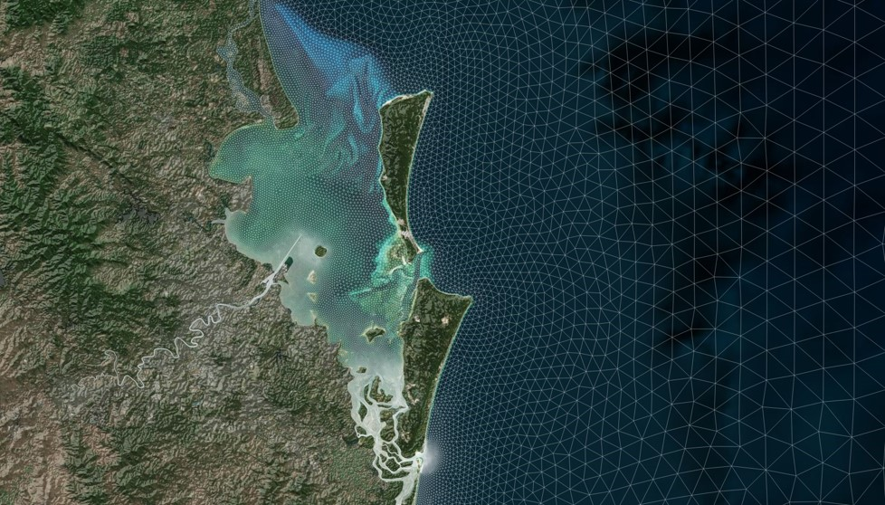
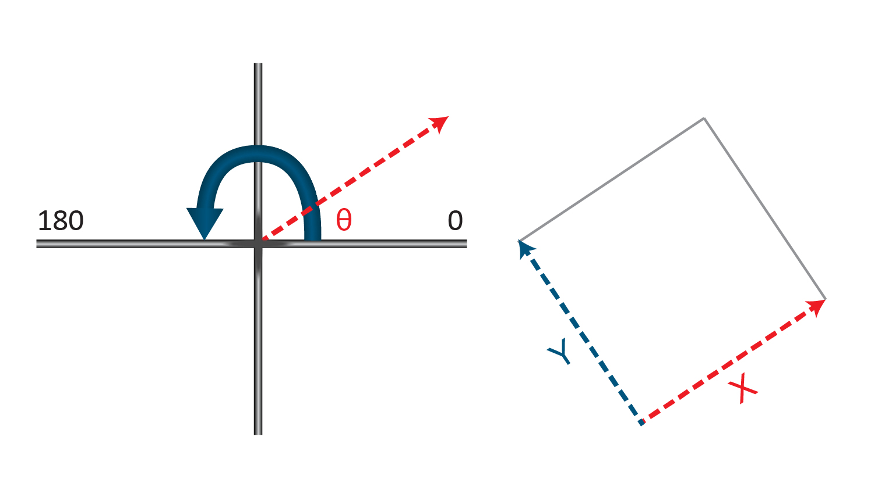
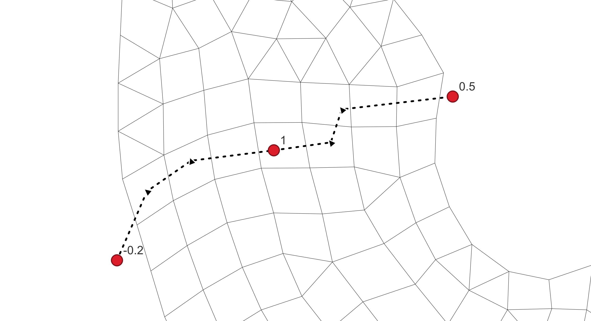
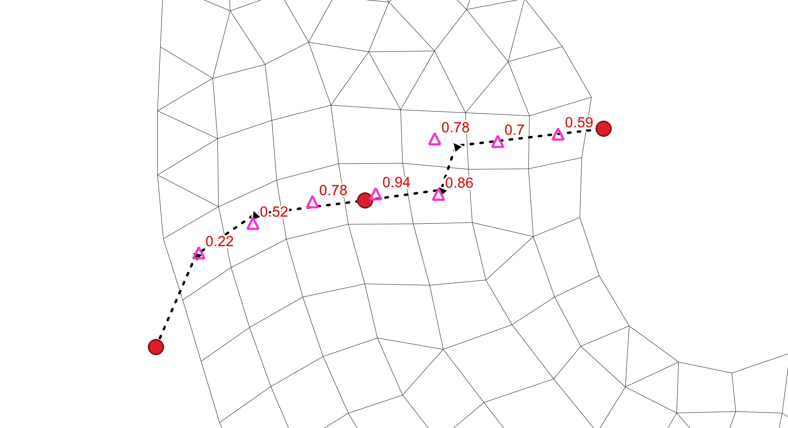

Section 5 Model Construction: 2D HD Simulation Class
5.1 Overview
This chapter describes how to construct a 2D Hydrodynamic (2D HD) simulation class. The 2D HD simulation class provides the foundation for all subsequent simulation classes and is typically the first simulation constructed.
A 2D HD simulation is configured through a single model initialisation process followed by the definition of the required and optional model classes as described in Section 2.2.2. Model classes introduced in this chapter form the basis for subsequent simulation classes and may be reused or extended as defined by the simulation class architecture.
5.1.1 Using the Model Construction Chapters
All model construction chapters in this manual follow the same structure.
Each chapter begins with an overview followed by a section for each model class applicable to the simulation class. For each model class the following sub-sections are provided.
- Command Status: Identifies whether the model class is required, conditionally required or optional for the simulation class
- Description: Outlines the purpose of the model class and includes a summary table of applicable commands
- One or more Model Implementation sections: These describe the supported configuration approaches for the model class
Where applicable model implementation sections include example TUFLOW FV syntax that can be copied directly into a control file.
Command summary tables provided in each model class Description section identify the commands required to configure the model class and provide direct links to the command appendix where each command is formally defined. Where commands require input parameters detailed parameter definitions are provided in the parameter appendix. References to governing equations and model science are provided in the relevant processes appendices.
Model construction chapters focus on configuration and workflow and reference supporting material in the appendices. Readers are expected to move between the construction chapters and appendices as needed during model development.
5.1.2 Recommended Workflow for Model Construction
The recommended workflow for model construction is as follows.
- Read the Architecture chapter to understand the simulation class framework and how construction chapters are organised
- Begin with the 2D HD simulation class and construct a 2D only model
- For each model class review the command status and description
- Select an appropriate model implementation for required model classes and determine whether conditionally required or optional model classes are needed
- Use the command tables to identify required commands and refer to the command and parameter appendices for detailed input requirements, linking to the relevant processes appendices as required
- Copy the example syntax into the TUFLOW FV control file and modify as needed
- Repeat this process for each model class until the simulation is complete
- Extend the model to additional simulation classes as required
5.2 Model Initialisation
Model initialisation includes the following steps.
- Create the standard TUFLOW FV folder structure (Section 4.2)
- Define the Coordinate Reference Frame (Section 5.3) which includes selection of the GIS format, coordinate reference system and model units
- Create empty template GIS and control files
To assist with the above a freely available TUFLOW QGIS plugin has been developed. TUFLOW eLearning resources (also free of charge) have been prepared to support deployment and use of this TUFLOW plugin, and as such the content of that resource is not repeated here. Users are encouraged to access this resource before initialising their first TUFLOW FV simulation: using this plugin is seen as a core component of the set up of a TUFLOW FV simulation. Doing so manually is discouraged. The eLearning materials can be accessed by:
- Registering for TUFLOW FV eLearning here if not already registered
- Emailing support@tuflow.com noting the registered username and with a request access to the TUFLOW plugin eLearning course
- Following instructions subsequently provided to access the course
- Completing the course
On completion of the course, users will be able to initialise a TUFLOW FV simulation in the desired geographical projection system and units. The sections presented below assume that this QGIS initialisation process is complete and as such describe the resulting general arrangements and subsequent construction of a TUFLOW FV simulation.
5.3 Coordinate Reference Frame
5.3.1 Command Status
Required - If using the recommended TUFLOW QGIS Plugin model initialisation process (Section 5.2) the coordinate reference frame commands are automatically populated and this section is provided for reference.
5.3.2 Description
The coordinate reference frame defines how spatial locations and units are interpreted within the TUFLOW FV model domain. It determines the projection system, horizontal geometry (Cartesian or spherical) and the unit system used for all spatial inputs and calculations. All input and output files must be defined in the same coordinate reference frame.
TUFLOW FV offers three coordinate reference frame model implementations as presented in Table 5.1. These implementations represent predefined combinations of horizontal geometry and unit system. Links in the Model Implementation column provide direct access to further information and example syntax for each implementation.
The coordinate reference frame is configured using the following five steps.
- Set the model projection. For QGIS or ArcGIS use the
SHP Projection command. For Mapinfo use theMI Projection command - Set the GIS output format. For QGIS or ArcGIS use
GIS Format == SHP . For Mapinfo useGIS Format == MIF - Generate empty template GIS input layers in the model coordinate system using the
Write Empty GIS Layers command - Set the computational coordinate system to either Cartesian or Spherical using the
Spherical command - Select the model units as either Metric or US Customary via the
Units command
The coordinate reference frame commands are summarised in Table 5.2.
| Model Implementation | Description |
|---|---|
| Cartesian (Metric Units) | Projected coordinate system with eastings and northings in meters. |
| Spherical (Metric Units) | Geographical coordinate system with longitudes and latitudes in decimal degrees. |
| Cartesian (US Customary Units) | Projected coordinate system with eastings and northings in feet. |
| Command | Description |
|---|---|
| SHP Projection | Conditional - Only required if using ESRI .shp files. Defines an ESRI shape file projection string or .prj file that sets the geographical coordinate system for all input and output shape file GIS layers. |
| MI Projection | Conditional - Only required if using Mapinfo .mif files. Defines a Mapinfo projection string or .mif file that sets the geographical coordinate system for all input and output GIS .mif layers. |
| GIS Projection Check | Optional - Sets the error level when comparing input GIS layer projections with the model projection. |
| GIS Format | Required - Sets the format of output GIS files. |
| Write Empty GIS Layers | Required - Writes empty template GIS files used for TUFLOW FV model development in the choosen model projection. |
| Spherical | Optional - Defines the computational coordinate system used by TUFLOW FV’s solver to Spherical (Longitude and Latitude) or Cartesian (Eastings and Northings) coordinates. |
| Latitude | Conditional - Sets the latitude for Coriolis calculations when a Cartesian coordinate system is used. |
| Units | Optional - Sets the model to Metric or US Customary Units. |
5.3.3 Cartesian (Metric Units)
Cartesian models use projected coordinates in horizontal units of meters. This coordinate reference frame implementation is typically used for models with domains less than 100km in size. For example estuaries, lakes, rivers and floodplains. This is the default coordinate reference frame.
! Cartesian (Eastings and Northings) Model in Metric Units
SHP Projection == ..\model\gis\projection.prj ! Projection string - No default
GIS Format == SHP ! {MIF} | SHP
! Write Empty GIS Layers == ..\model\shp\empty ! Directory to write empty GIS vector layers. Only need to run this once during model setup
Units == Metric ! {Metric} | US Customary | Imperial | English
Spherical == 0 ! {0} Cartesian | 1 Spherical
Latitude == -32.0 ! {0.0} Representative latitude for study area
5.3.4 Spherical (Metric Units)
Spherical models use longitude and latitude coordinates in horizontal units of decimal degrees. This coordinate reference frame implementation is typically used for coastal and ocean model domains.
! Spherical (Longitude and Latitude) Model in Metric Units
SHP Projection == ..\model\gis\projection.prj ! Projection string - No default
GIS Format == SHP ! {MIF} | SHP
! Write Empty GIS Layers == ..\model\shp\empty ! Directory to write empty GIS vector layers. Only need to run this once during model setup
Units == Metric ! {Metric} | US Customary | Imperial | English
Spherical == 1 ! {0} Cartesian | 1 Spherical
5.3.5 Cartesian (US Customary Units)
Cartesian models use projected coordinates in horizontal units of feet. This coordinate reference frame implementation is typically used for models with domains less than 100km in size. For example estuaries, lakes, rivers and floodplains.
! Cartesian (Eastings and Northings) Model in US Customary Units
SHP Projection == ..\model\gis\projection.prj ! Projection string - No default
GIS Format == SHP ! {MIF} | SHP
! Write Empty GIS Layers == ..\model\shp\empty ! Directory to write empty GIS vector layers. Only need to run this once during model setup
Units == US Customary ! {Metric} | US Customary | Imperial | English
Spherical == 0 ! {0} Cartesian | 1 Spherical
Latitude == 27.5 ! {0.0} Representative latitude for study area
5.4 Hardware
5.4.1 Command Status
Optional: The commands in this section are only required if running on Graphical Processing Unit (GPU) hardware, otherwise defaults will apply and the commands can be omitted from the .fvc file.
5.4.2 Description
Hardware commands affect how a simulation will utilise computer resources. Simulations can be run using the Central Processing Unit (CPU), or a combination of CPU and Graphical Processing Unit (GPU).
Hardware model implementations are summarised in Table 5.3, with links to the relevant implementation sections below. Hardware configuration commands are set via Table 5.4. In practice, these defaults are typically overridden at runtime through the use of Windows Batch or Linux Shell Script switches (See Appendix D.3.2) MJS APPENDIX TODO NEEDS TIDY UP.
| Model Implementation | Description |
|---|---|
| CPU | Run TUFLOW FV using CPU processing only. |
| GPU | Run TUFLOW FV using a combination of CPU and GPU. |
| Command | Description |
|---|---|
| Hardware | Optional - Run the simulation using Central Processing Unit (CPU) only or a combination of Central Processing Unit and Graphical Processing Unit (GPU). |
| Device ID | Optional - Select the NVIDIA GPU Device ID to run a simulation on. |
5.4.3 CPU
This hardware implementation is the default and will run TUFLOW FV on CPU processing only. CPU processing can be parallellised across multiple CPU threads which is configured using environment variables at runtime (See Appendix D.3.2). MJS TODO, LIKELY MOVE THIS LINK AND MULTITHREAD DISCUSSION TO RUNNING SIMULATIONS SECTION.
! Run on CPU Hardware
Hardware == CPU ! {CPU} | GPU
5.4.4 GPU
This hardware implementation enables access to GPU accelerated compute. It requires access to both a compatible NVIDIA graphics card (See Appendix D.3) and a TUFLOW FV GPU Module license.
! Run on GPU Hardware
Hardware == GPU ! {CPU} | GPU
GPU Device ID == 0 ! {0} NVIDIA Device ID
5.5 Spatial Order
5.5.1 Command Status
Optional: The commands in this section are only required if second order horizontal spatial reconstruction is specified, otherwise defaults will apply and the commands can be omitted from the .fvc file.
5.5.2 Description
Spatial order defines how the values of model variables, such as depth and velocity, are assigned at cell faces during calculation. First and second order options are available. The option to use is dependent on the modelling problem being investigated (See Appendix D.4) MJS APPENDIX TODO, NEEDS TIDY UP. Supported spatial order model implementations are summarised in Table 5.5, with links to the relevant implementation sections below. Horizontal spatial order commands relevant to the 2D HD simulation class are provided in Table 5.6.
| Model Implementation | Description |
|---|---|
| First Order | Uses a first order numerical method when calculating fluxes between cells. |
| Second Order | Uses a second order numerical method when calculating fluxes between cells. |
| Command | Description |
|---|---|
| Spatial Order | Optional - Sets the horizontal spatial reconstruction to first or second order. |
| Horizontal Gradient Limiter | Conditional - Sets the horizontal gradient limiter model used with second order horizonal spatial reconstruction. Ignored if using first order spatial reconstruction. |
| Horizontal AlphaR | Conditional - Sets a reduction factor to scale between first and second order horizontal spatial reconstructions for depth, velocity and scalar model variable fields. Ignored if using first order spatial reconstruction. |
5.5.3 First Order
First order horizontal spatial reconstruction calculates fluxes between cells using a uniform value within each cell which provides a stable and reliable solution. It is the default spatial order implementation.
! First Order Horizontal Spatial Accuracy
Spatial Order == 1,1 ! {1} 1st Order Horizontal | 2 2nd Order Horizontal, The second term is not used for the 2D HD simulation class
5.5.4 Second Order
Second order horizontal spatial reconstruction computes fluxes between cells using estimated gradients within each cell. This approach represents sub cell variation in flow properties rather than assuming uniform conditions and therefore produces a more accurate numerical solution. The scheme is typically applied to problems with strong spatial gradients in velocity or water level, such as those encountered in riverine channels and floodplain inundation modelling.
! Second Order Horizontal Spatial Accuracy With Gradient Limiters
Spatial Order == 2,1 ! {1} 1st Order Horizontal | 2 2nd Order Horizontal, The second term is not used for the 2D HD simulation class
Horizontal Gradient Limiter == LCD ! {LCD} | MLG
Horizontal AlphaR == 1.0, 1.0, 1.0 ! {1.0} AlphaH (depth), {1.0} AlphaV (velocity), {1.0} AlphaS (scalars)
5.6 Simulation Time Settings
5.6.2 Description
Simulation time settings define the temporal framework for a TUFLOW FV model including how time is formatted, interpreted, and applied across inputs and outputs. These settings control the simulation start and end times, establish the reference time datum and ensure consistency when reading time series data or writing results.
TUFLOW FV supports ISODATE and HOURS formats and these are set using the
Simulation start and end times are specified using the
| Model Implementation | Description |
|---|---|
| Hours | Model times are specified in decimal hours. |
| ISODATE | Model times are specified in dd/mm/yyyy HH:MM:SS datetime format. |
| Command | Description |
|---|---|
| Time Format | Optional - Sets the format of time to either decimal HOURS or ISODATE (dd/mm/yyyy HH:MM:SS). |
| Start Time | Required - Specifies the start time for the simulation. |
| End Time | Required - Specifies the end time for the simulation. |
5.6.3 Hours
Using this method model times are specified in decimal hours relative to 0.0 hrs. This is the default simulation time settings implementation.
! Time settings using the HOURS time format
Time Format == Hours ! {Hours} | ISODATE
Start Time == 0.0 ! Simulation Start Time (Hours)
End Time == 3.0 ! Simulation End Time (Hours)
5.6.4 ISODate
Using this method model times are specified in dd/mm/yyyy HH:MM:SS format. This implementation is useful if running models for specific hindcast periods or when needing to calibrate models to observed data.
! Time settings using the ISODATE time format
Time Format == ISODATE ! {Hours} | ISODATE
Start Time == 01/01/2015 00:00:00 ! Simulation Start Time (dd/mm/yyyy HH:MM:SS)
End Time == 01/02/2015 00:00:00 ! Simulation End Time (dd/mm/yyyy HH:MM:SS)
5.7 Computational Timestep
5.7.2 Description
The computational timestep defines how frequently TUFLOW FV updates the model state during a simulation. It directly influences model stability, accuracy, and model run times.
TUFLOW FV uses an adaptive computational timestep that changes during a simulation in response to flow and scalar concentration stability constraints. Timestep selection and timestep science is described in Appendix D.6. The computational timestep model implementation is summarised in Table 5.9, with a link to the relevant implementation section below. The commands affecting TUFLOW FV’s computational timestep are provided in Table 5.10.
| Model Implementation | Description |
|---|---|
| Computational Timestep | Sets timestep limit and timestep stability constraints. |
| Command | Description |
|---|---|
| Timestep Limits | Required - Sets the limiting value for the lower and upper timestep for the simulation. |
| CFL | Optional - Assigns the global computational stability constraints. |
| CFL Internal | Optional - Command to override the global CFL stability constraint for internal mode calculations. |
| CFL External | Optional - Command to override the global CFL stability constraint for external mode calculations. |
5.7.3 Computational Timestep
The following example is a typical setup for a 2D HD simulation where a single CFL constraint is used.
! GLobal CFL With Timestep Limits
CFL == 0.95 ! {1.0} CFL Number
Timestep Limits == 0.5, 5.0 ! {No default} Minimum Timestep (s), {No default} Maximum Timestep (s)
This example shows the use of differing internal and external model CFL numbers. This can be of use to improve model stability and speed when internal model processes are constraining the overall model timestep. For example, if turbulent mixing processes are constraining the timestep.
! Internal and External CFL With Timestep Limits
CFL Internal == 0.6 ! {1.0} Internal CFL Number
CFL External == 0.95 ! {1.0} External CFL Number
Timestep Limits == 0.5, 5.0 ! {No default} Minimum Timestep (s), {No default} Maximum Timestep (s)
5.8 Wetting And Drying
5.8.1 Command Status
Optional: Wetting and drying and stability limits commands are optional and can be omitted from the .fvc file.
5.8.2 Description
Wetting and drying refers to the process by which individual cells in the computational mesh transition between wet (active) and dry
(inactive) states during a simulation. TUFLOW FV supports wetting and drying by progressively switching on model computations as a function of cell depth. Two depth thresholds, the drying depth, and the wetting depth are set using the
The resultant dry, transitional and wet cell computations are listed as follows and shown in Figure 5.1. The wetting and drying model implementation is summarised in Table 5.11, with a link to the relevant implementation section below. Commands are listed in Table 5.12.
Dry: For cell depths \(<\) the drying depth, the cell is dropped from flux computations. Mass at the cell is conserved. For example, a model with direct rainfall will allow depth to build in the cell however, this mass cannot be transferred to adjacent cells until the depth reaches the transitional depth
Transitional: For depths between the drying and wetting depths (\(\geq\) drying, \(<\) wetting), mass and momentum fluxes are calculated, however cell centre momentum is set to zero. This prevents non-physical velocities in shallow flow depths
Wet: Cells with depths \(\geq\) wetting depth have mass and momentum calculations enabled with no corrections

Figure 5.1: Wetting And Drying Depths
| Model Implementation | Description |
|---|---|
| Wetting And Drying | Sets depth constraints for switching off cell calculations in drying cells. |
| Command | Description |
|---|---|
| Cell Wet/Dry Depth | Optional - Sets the cell wetting and drying depths used to switch off momentum and mass calculations in regions of shallow flow. |
5.8.3 Wetting And Drying
The below shows two examples for wetting and drying thresholds for metric and U.S. Customary units respectively.
Example (metric units).
! Wetting And Drying (Metric)
Cell Wet/Dry Depths == 0.0001, 0.05 ! {1.e-5} Dry depth (m), {1.e-2} Wet depth (m)
Example (US customary units).
! Wetting And Drying (U.S. Customary)
Cell Wet/Dry Depths == 0.001, 0.1 ! {3.28e-5} Dry depth (ft), {3.28e-2} Wet depth (ft)
5.9 Bottom Drag
5.9.2 Description
Bottom roughness is modelled by setting the
Bottom drag model science is provided in Appendix D.8 MJS APPENDIX TODO TIDY UP.
| Model Implementation | Description |
|---|---|
| Manning | Manning roughness formulation for bottom drag. |
| ks | Equivalent sand roughness formulation for bottom drag. |
| Command | Description |
|---|---|
| Bottom Drag Model | Required - Sets the bottom drag model for bed friction calculations. |
| Global Bottom Roughness | Required - Sets the default global Manning’s ‘n’ coefficient or Nikuradse roughness length. |
5.9.3 Manning
This model represents bottom roughness through the use of the Manning’s equation and is the default bed roughness model. It requires the spatial definition of Manning’s ‘n’ roughness coefficients.
! Manning Bottom Drag Model
Bottom Drag Model == Manning ! {Manning} | ks
Global Bottom Roughness == 0.03 ! {1.0E-6} Manning's 'n'
5.9.4 ks
This model implements a log-law velocity profile model. It requires the spatial definition of Nikuradse roughness length scale (ks) values.
Example (ks model, metric units).
! ks Bottom Drag Model (Metric Units)
Bottom Drag Model == ks ! {Manning} | ks
Global Bottom Roughness == 0.1 ! {1.0E-6} Nikuradse roughness length (m)
Example (ks model, US customary units).
! ks Bottom Drag Model (US Customary Units)
Bottom Drag Model == ks ! {Manning} | ks
Global Bed Roughness == 0.3 ! {1.0E-6} Nikuradse roughness length (ft)
5.10 Horizontal Mixing
5.10.2 Description
Horizontal turbulent mixing is specified for the entire model domain by using the
Horizontal momentum mixing model science is provided in Appendix D.9.
| Model Implementation | Description |
|---|---|
| None | No horizontal momentum mixing. |
| Constant | Spatially constant momentum mixing value. |
| Smagorinsky | Smagorinsky turbulence closure for momentum mixing. |
| Wu | Wu momentum mixing formulation. |
| Command | Description |
|---|---|
| Momentum Mixing Model | Required - Selects the momentum mixing model for horizontal sub-grid scale turbulent mixing. |
| Global Horizontal Eddy Viscosity | Conditional - Assigns the eddy viscosity coefficient or constant value. |
| Global Horizontal Eddy Viscosity Limits | Conditional - Sets a minimum and maximum limit on computed eddy viscosity. An upper limit value of 99999. is commonly used to apply uncapped eddy viscosity. |
5.10.3 None
This model is the default and excludes the simulation of momentum mixing. Using none is useful for analytical cases and laboratory experiments. It is not recommended for project modelling and an alternative momentum mixing model implementation should be adopted.
! Momentum Mixing Disabled
Momentum Mixing Model == None ! {None} | Constant | Smagorinsky | Wu
5.10.4 Constant
This model applies a spatially constant eddy viscosity value to all cells in the model domain.
! Constant Model
Momentum Mixing Model == Constant ! {None} | Constant | Smagorinsky | Wu
Global Horizontal Eddy Viscosity == 1.0 ! {0.0} Eddy viscosity (m²/s)
5.10.5 Smagorinsky
This model calculates eddy viscosity on a cell by cell basis using local horizontal velocity gradients and cell size. This method is recommended for ocean, coastal, estuarine and lake studies or for models that are likely to be extended to 3D hydrodynamics during a project.
! Smagorinsky Model
Momentum Mixing Model == Smagorinsky ! {None} | Constant | Smagorinsky | Wu
Global Horizontal Eddy Viscosity == 0.5 ! {0.0} Smagorinksy coefficient
Global Horizontal Eddy Viscosity Limits == 0.05, 99999. ! {0.0} Minimum eddy viscosity (m²/s), {99999.} Maximum eddy viscosity (m²/s)
5.10.6 Wu
This model calculates eddy viscosity on a cell by cell basis using local velocity gradients and water depth. Wu is recommended for 2D only simulations (and unlikely to be extended to 3D) in riverine and floodplain areas where cell size can become small relative to the water depth
! Wu Model
Momentum Mixing Model == Wu ! {None} | Constant | Smagorinsky | Wu
Global Horizontal Eddy Viscosity == 4.0 ! {0.0} Wu coefficient
Global Horizontal Eddy Viscosity Limits == 0.05, 99999. ! {0.0} Minimum eddy viscosity (m²/s), {99999.} Maximum eddy viscosity (m²/s)
5.11 Wind Stress
MJS TODO: Needs review.
5.11.2 Description
Wind stress may be applied as a surface forcing term when wind boundary conditions such as CYC_HOLLAND, W10 or W10_GRID are specified. The
| Model Implementation | Description |
|---|---|
| Wu | Wu wind stress parameterisation. |
| Constant | Constant bulk wind stress coefficient. |
| Kondo | Kondo wind stress parameterisation. |
| Command | Description |
|---|---|
| Wind Stress Model | Optional – Selects the wind stress parameterisation. Options are 1 (Wu), 2 (Constant) or 3 (Kondo). Default: 1 (Wu). |
| Wind Stress Parameters | Conditional – Used when Wind Stress Model == 1 (Wu) or 3 (Kondo). For Wu this command specifies Wa, Ca, Wb, Cb defining the wind speed dependent transfer coefficient. For Kondo this command specifies a scale factor applied to the internally calculated transfer coefficient. |
| Bulk Momentum Transfer Coefficient | Conditional – Required when Wind Stress Model == 2 (Constant). Specifies the constant bulk momentum transfer coefficient |
5.11.3 Wu
The Wu wind stress model is the default. Wind stress is scaled using a wind speed dependent transfer coefficient defined by the
! Wu Wind Stress Model
Wind Stress Model == 1 ! {1 Wu} | 2 Constant | 3 Kondo
Wind Stress Parameters == 0.0,0.0008,50.0,0.00405
! Wa(m/s), Ca(-), Wb(m/s), Cb(-)
5.11.4 Constant
The Constant wind stress model uses a spatially constant bulk momentum transfer coefficient to compute wind stress. The coefficient is specified using the
! Constant Wind Stress Model
Wind Stress Model == 2 ! {1 Wu} | 2 Constant | 3 Kondo
Bulk Momentum Transfer Coefficient == 0.0013 ! CDN (-)
5.11.5 Kondo
The Kondo wind stress model calculates the bulk momentum transfer coefficient internally using an empirical formulation based on wind speed. A user specified scale factor may optionally be applied to adjust the magnitude of the calculated coefficient.
! Kondo Wind Stress Model
Wind Stress Model == 3/tblk> ! {1 Wu} | 2 Constant | 3 Kondo
Wind Stress Parameters == 1.0 ! {1.0} Scale factor (-)
5.12 Computational Mesh
5.12.2 Description
The computational mesh defines the horizontal spatial discretisation of the model domain and forms the geometric basis for all calculations in TUFLOW FV. Supported computational mesh model implementations are summarised in Table 5.19, with links to the relevant implementation sections below. The required commands for these implementations are summarised in Table 5.20. The following two mesh types are supported and the user is required to select one method or the other.
| Model Implementation | Description |
|---|---|
| Unstructured | Unstructured mesh implementation. |
| Structured | Structured mesh implementation. |
| Command | Description |
|---|---|
| Geometry 2D | Conditional - Required if using the unstructured mesh model implementation. Reads the mesh topology from a .2dm unstructured mesh file. This mesh may contain triangles, quadrilaterals, or a combination of these geometries. The mesh may also contain bathymetry and material information. Only one Geometry 2d command and mesh should be used per simulation. |
| Grid Origin | Conditional - Required if using the structured mesh model implementation. X and Y coordinate of the grid origin |
| Grid Rotation | Optional - Structured grid rotation angle. |
| Cell Size | Conditional - Required if using the structured mesh model implementation. The model cell size which can be independent in the X and Y directions |
| Grid Size | Conditional - Required if using the structured mesh model implementation. The length of the X and Y grid axis |
5.12.3 Unstructured Mesh
This is the usual mesh type used for TUFLOW FV modelling. TUFLOW FV supports unstructured meshes generated in the Aquaveo SMS .2dm file format (Appendix D.11.1.1) MJS APPENDIX TODO TIDY UP. Unstructured meshes (also commonly referred to as flexible meshes) are typically used to represent complex geometries such as estuaries, rivers, and coastal systems such as the mesh shown in Figure 5.2.
Detailed instructions on how to generate unstructured meshes are provided in TUFLOW FV’s Tutorial Modules. The tutorials range in complexity, and provide general guidance on meshing with links to educational meshing resources.
Unstructured meshes are read using the
! Unstructured Mesh
Geometry 2D == ..\model\geo\MB_001.2dm 
Figure 5.2: Moreton Bay Unstructured Mesh (Constructed Using Aquaveo SMS)
5.12.4 Structured Mesh
Structured rectangular meshes, with or without rotation, are defined using the set of commands listed in Table 5.20. These meshes are useful for doing direct comparisons with other regular grid models or laboratory tests.
The

Figure 5.3: Regular Mesh Rotation Convention
Structured Mesh
The below example shows the development of a 20 m resolution cartesian model. The resultant mesh is shown in Figure 5.4
! Regular grid definition
Grid Origin == 548225, 7015813 ! X origin, Y origin (m or decimal degrees)
Grid Rotation == 20. ! Rotation of x axis (degrees anti-clockwise from east)
Cell Size == 100., 100. ! Cell size x, Cell size y (m or decimal degrees)
Grid Size == 1000., 1000. ! Grid size x, Grid size y (m or decimal degrees)

Figure 5.4: Example Regular Mesh - Cell IDs are presented at each cell centre
5.13 Bathymetry
5.13.1 Command Status
Conditional
Static bathymetry commands are optional if using an unstructured computational mesh
Static bathymetry commands are required if using a structured computational mesh
Time varying bathymetry commands are optional for either computational mesh type
5.13.2 Description
Supported bathymetry model implementations are summarised in Table 5.21, with links to the relevant implementation sections below. Static bathymetry commands are documented in this section (Table 5.22). Time varying bathymetry implementation details are provided in Section 5.13.4.
| Model Implementation | Description |
|---|---|
| Static | Static bathymetry assignment and layering approaches. |
| Time Varying | Time varying bathymetry implementation. |
| Command | Description |
|---|---|
| Set Zpts | Optional - Sets all elevations in the domain to a user specified value (Section 5.13.3.1). |
| Read GRID Zpts | Optional - Updates cell centre elevations via a Digital Elevation Model (DEM) file (Section 5.13.3.2). |
| Read TIN Zpts | Optional - Updates selected cell centre elevations via a Triangulated Irregular Network (TIN) file (Section 5.13.3.3). |
| Read GIS Z Line | Optional - Reads GIS files that can contain polylines, points and/or polygons. Points and polylines are treated as breaklines in the model’s bathymetry (Section 5.13.3.4). The breakline can vary in height along its length (i.e. a 3D breakline). Polygon features set a user-specified z elevation that updates any cell centroids located within the polygon extent (Section 5.13.3.5). |
| Cell Elevation File | Optional - CSV file that updates cell centre elevations. Can be assigned using (Cell ID, Z) or (X,Y,Z) coordinates (Section 5.13.3.6). |
| Global Bed Elevation Limits | Optional - Sets a spatially constant lower limit (zbmin) and upper limit (zbmax) to the model bathymetry. Model elevations below zbmin will be set to zbmin, and likewise model elevations will be set to zbmax. This command is executed after all other bathymetry commands, and will overwrite any preceeding bathymetry below or above the zbmin or zbmax values (Section 5.13.3.7). |
Static bathymetry commands can be applied individually or in combination, with TUFLOW FV input data layering determining the final bathymetric surface. An example of bathymetric data layering is provided in Section 5.13.3.8.
5.13.3 Static Bathymetry
TUFLOW FV supports the assignment of static model bathymetry using a range of input formats, including unstructured mesh files (.2dm), Triangulated Irregular Networks (TINs), Digital Elevation Models (DEMs), and GIS vector layers. These datasets are used to define elevations across the model domain, enforce bathymetric breaklines, and assign elevation values to specified spatial regions.
The workflow used to apply bathymetry depends on the mesh type. For structured meshes (Section 5.12.4), at least one static bathymetry command is required to define bed elevations. For unstructured meshes (Section 5.12.3) bathymetry is initially provided through the .2dm mesh file. This base .2dm bathymetry can then be optionally updated or replaced using the static bathymetry commands described in the following sections.
When using unstructured meshes it is generally preferable to disregard the bathymetry stored within the .2dm file and instead define bathymetry directly within the TUFLOW FV control file using external datasets. The reasons for this are as follows.
- The .2dm file contains both the mesh topology and a vertex based bathymetry dataset. Because the bathymetry is stored at mesh vertices it is inherently dependent on the mesh geometry. Any modification to the mesh topology requires the bathymetry to be regenerated
- During model initialisation, TUFLOW FV averages vertex elevations from the .2dm file to cell centred bathymetry values. This can lead to smoothing of narrow channels, banks, levees, or other small scale features. For applications with relatively uniform bed levels, such as large lakes or offshore domains, this behaviour may be acceptable and the user can use the .2dm alone to define the bathymetry. For applications requiring accurate representation of fine bathymetric detail it is recommended to use bathymetric update commands
The recommended workflow to apply model bathymetry is as follows.
- The unstructured mesh is read from the .2dm file. The associated bathymetry is loaded by default during this step
- The initial bathymetry from Step 1 is disregarded by applying a global default bathymetry value (Section 5.13.3.1)
- Detailed bathymetric data are assigned using spatially varying datasets such as DEMs (Section 5.13.3.2) or TINs (Section 5.13.3.3). These commands interpolate elevations directly to cell centres and are mesh independent
- The base bathymetry established in the previous step can be locally modified to represent hydraulic controls or design features. For example using breaklines to define channel thalwegs, embankment crests, levees, or other linear structures (Section 5.13.3.4) or to incorporate proposed earthworks, cut and fill operations
The static bathymetry command implementations listed in Table 5.22 are described in the sub sections that follow.
5.13.3.1 Spatially Constant
A spatially constant single elevation can be set for the model domain using the
! Set all elevations in the model to 10.0 mRL
Set Zpts == 10.0 ! {no default} Elevation (mRL of ftRL)
5.13.3.2 Direct Reading Of DEM Grids
The
! Interpolate elevations from DEM
Read GRID Zpts == ..\model\geo\Lidar_5m_202306.asc ! {no default} DEM file path (mRL of ftRL)
5.13.3.3 Direct Reading Of TINs
Bathymetry can be assigned using TINs through the
! Interpolate elevations from TIN
Read TIN Zpts == ..\model\geo\Bathy_Survey_202011.tin ! {no default} TIN file path (mRL of ftRL)
5.13.3.4 Breakline Layers
The
Figure 5.5 shows an example using breaklines layers to enforce the bathymetry of a design bund. In the left pane a breakline polyline (black dash) has been digitised with elevation points (red circles) snapped to the start, middle and end polyline vertices with elevations -0.2, 1.0 and 0.5 m respectively. During model start up cell elevations are linearly interpolated along the polyline resulting in the cell centre elevation updates indicated by the pink triangles with red labels in the right image.


Figure 5.5: Breakline Definition Using Combination Of Polyline And Point GIS Layers
The template GIS layers required to define breaklines, prefixed with ‘2d_zln_’ are generated during model initialisation (Section 5.2). Multiple geometry types are supported and are indicated by the following suffixes:
_P for point features (e.g., 2d_zln_M03_002_P.shp)
_L for line features (e.g., 2d_zln_M03_002_L.shp)
‘2d_zln_’ layers require the assignment of a single ‘Elevation’ attribute as shown in Table 5.23.
| Attribute Name(s) | Description | Type |
|---|---|---|
| Elevation | Elevation of the feature relative to the model’s vertical datum. | Float |
When specifying
! Enforce road centreline
Read GIS Z Line == ..\model\gis\2d_zln_M03_002_L.shp | ..\model\gis\2d_zln_M03_002_P.shp ! {no default} GIS layer file path(s)
Multiple point files may be included but must not appear as the first entry in the list.
! Enforce road centreline Using multiple points files
Read GIS Z Line == ..\model\gis\2d_zln_M03_002_L.shp | ..\model\gis\2d_zln_M03_002_P.shp | ..\model\gis\2d_zln_M03_003_P.shp ! {no default} GIS layer file path(s)
If using Mapinfo .mif files, point and polyline geometries can be contained in a single .mif file if preferred.
! Enforce road centreline - Mapinfo
Read GIS Z Line == ..\model\gis\2d_zln_M03_001.mif ! {no default} GIS layer file path
Modified cell centre elevations are output to the 2d_zln_zpt_check layer if
5.13.3.5 Polygon Layers
GIS polygon layers can be used to set a spatially constant elevation for any cell centroids located within a polygon’s extent using the
The template GIS layers required to define elevation polygons, prefixed with ‘2d_zln_’ are generated during model initialisation (Section 5.2). For example:
- _R for polygon features (e.g., 2d_zln_Reclaimation_001_R.shp)
‘2d_zln_’ layers require the assignment of a single ‘Elevation’ attribute (see Table 5.23). An example syntax block is provided as follows.
! Enforce fill elevation
Read GIS Z Line == ..\model\gis\2d_zln_Reclaimation_001_R.shp ! {no default} GIS layer file path
A polygon (blue hatching in Figure 5.6) can be used to enforce the infill area associated with a proposed development. Cell centre values updated by the polygon can be visualised in GIS using the 2d_zln_zpt_check layer (see 12.4). The pink triangles indicate that bathymetry has been raised to 2 mRL. The symbology is the default styling applied using the TUFLOW Viewer Plugin for QGIS for check file layers.

Figure 5.6: Filling Of Spoil Ground Modelled Using GIS Polygon
5.13.3.6 Preprocessed Cell Elevations
This method can be used in preference to the commands mentioned above if model startup times are prohibitively slow. Unlike other bathymetric assignment methods, cell ID referencing does not require interpolation enabling near instantaneous bathymetry assignment during model start up. However, this approach is mesh specific and requires preprocessing prior to running a TUFLOW FV simulation. If the mesh is modified, a new cell elevation file must be generated. Due to its dependence on the mesh structure, this method is recommended only if minimising model initialisation time is a priority.
The
! Cell Elevation File
Cell Elevation File == ..\model\geo\OC_001_CC_Inspect.csv, ID ! {no default} File path, {ID} | Coordinate
! Example contents of OC_001_CC_Inspect.csv for a mesh with 22,350 cells
! ID, Z
! 1, -5.2
! 2, -8.3
! ..., ...
! ..., ...
! 22350, 3.3
5.13.3.7 Bed Elevation Limits
The
Global bed elevation limit values can be overridden locally through use of material specific values (Section 5.14).
Global Bed Elevation Limits
! Set all bathymetry below -100 mRL to -100 mRL
Global Bed Elevation Limits == -100, 99999 ! {-9.99E+09} zbmin (mRL or ftRL), {9.99E+09} zbmax (mRL or ftRL)
5.13.3.8 Static Bathymetry Layering
This section provides an example of static bathymetric command layering. The application is a for a coastal model investigating a proposed port upgrade design. The following steps through the purpose of each line in the TUFLOW FV syntax block.
- A default bathymetric value of land value of 10 m is set. As this is a coastal project, this value is well above the highest water level expected during the analysis. This default is set to ensure any missing data values in the GIS are filled in and can be easily identified
- A TIN of bathymetric sounding data is used to define the existing ocean bathymetry, pre development
- Lidar derived survey is used to define the ‘base’ bathymetry for overland areas, pre development
- The design TIN earthworks of the proposed port development are ‘stamped’ onto the existing ‘base’ bathymetry
- Use a combination of polyline and point breakline layers to enforce the low chord of an approach channel within the proposed port development extent
The final bathymetry used by the simulation can be reviewed within the _mesh_check_R file if
! Overwrite .2dm Bathymetry with Updates
Set Zpts == 10.0 ! Set a default land value
Read TIN Zpts == ..\model\geo\Bathy_Survey_202011.tin ! Ocean bathy survey
Read GRID Zpts == ..\model\geo\Lidar_5m_202306.flt ! 5m LiDAR over land areas
Read TIN Zpts == ..\model\geo\Design_OPT_001.tin ! Tin concept design earthworks
Read GIS Z Line == ..\model\gis\2d_zln_Channel_Base_001_L.shp | ..\model\gis\2d_zln_Channel_Base_001_P.shp ! Enforce channel low chord
5.13.4 Time Varying Bathymetry
TUFLOW FV supports the specification of bathymetry that changes during the simulation using a set of time varying structure commands. These allow localised adjustments to bed elevation based on a prescribed time series, model sampled parameters (e.g. flow or level), or a combination of digital elevation model (DEM) surfaces and control rules. Common applications include the representation of levee breaches, sandbar migration, or event driven scouring and deposition.
Time varying bathymetry is configured using TUFLOW FV’s hydraulic structure block functionality and thus is not repeated here (see Section 5.17.10).
5.14 Materials
5.14.2 Description
Cell materials are used to define the spatial distribution of hydraulic and bed properties such as bottom roughness or horizontal eddy viscosity. The process to assign model materials is outlined as follows.
- Set a spatially constant default material for the model domain
- Optionally define spatially varying materials using GIS vector layers
- Define material blocks for each material defined in Steps 1 and 2 that link the spatial location of materials with hydraulic and bed properties
If an unstructured mesh is used (Section 5.12.3), material data sourced directly from the .2dm may be used and Steps 1 and 2 above can be ignored. However, due to the dependence on mesh topology it is recommended that .2dm materials be overridden using mesh independent TUFLOW FV material spatial layering commands. If a structured mesh is used material spatial layering commands are required.
Supported material model implementations are summarised in Table 5.24, with links to the relevant implementation sections below. Material commands are provided in Table 5.25. Example syntax for spatially defining materials and material properties are provided in the following sections.
Spatial material commands follow TUFLOW’s command layering approach (see Section MJSTODO). The final material set used by the simulation can be reviewed within the _mesh_check_R file if
| Model Implementation | Description |
|---|---|
| Spatially Constant | Single material assignment across the domain. |
| Spatially Varying | GIS based material mapping with one or more layers. |
| Command | Description |
|---|---|
| Set Mat | Optional - Sets all material in the domain to a single user specified value. |
| Read GIS Mat | Optional - Spatially vary cell materials using a GIS layer of polygons. |
| Material | Required - Instantiates a material block for a given material ID. |
| Bottom Roughness |
Optional - Assigns a material specific bottom roughness. Overrides the |
| Horizontal Eddy Viscosity |
Optional - Assigns material specific horizontal eddy viscosity value or coefficient. Overrides the |
| Horizontal Eddy Viscosity Limits |
Optional - Assigns material specific horizontal eddy viscosity limits. Overrides the |
| Bed Elevation Limits |
Optional - Assigns material specific bed elevation limits. Overrides the |
| Spatial Reconstruction | Optional - Used to revert an area to first order calculations where the model is otherwise a second order model. If a first order model is being used then this flag will have no effect. |
| End Material | Required - Closes the material block. |
Figure 5.7 shows the use of spatially varying material polygons to define the landcover and instream bed type for a coastal estuary analysis. The polygons are coloured according the the material ID assigned to each polygon which is labelled for each polygon.

Figure 5.7: Material ID Spatial Definition
5.14.2.1 Material Properties
Material properties are specified within a material block. Material blocks begins with the
Example material blocks are provided as follows.
Bottom Roughness
This example shows a global bottom roughness that is modified locally by three materials.
! Global Settings - ks Bottom Drag Model
Bottom Drag Model == ks ! {Manning} | ks
Global Bottom Roughness == 0.10 ! {1.0E-6} Nikuradse roughness length (m)
! Local Materials
! Sandy Bed
Material == 10 ! {0} Material ID
Bottom Roughness == 0.05 ! {Global value} Nikuradse roughness length (m)
End Material
! Overbank
Material == 2 ! {0} Material ID
Bottom Roughness == 0.15 ! {Global value} Nikuradse roughness length (m)
End Material
! Reeds
Material == 8 ! {0} Material ID
Bottom Roughness == 0.25 ! {Global value} Nikuradse roughness length (m)
End Material
This example shows a global bottom roughness that is locally modified within materials 3 and 4 using the same material block.
! Global Settings - Manning Bottom Drag Model
Bottom Drag Model == Manning ! {Manning} | ks
Global Bottom Roughness == 0.04 ! {1.0E-6} Manning's n roughness (s / m^1/3)
! Material block
! Riparian veg
Material == 3,4 ! {0} Material ID - two material IDs referenced
Bottom Roughness == 0.08 ! {Global value} Manning's n roughness (s / m^1/3)
End Material
Horizontal Eddy Viscosity
This example shows material specific updates of eddy viscosity coefficients and limits.
! Locally Increase Horizontal Eddy Viscosity
Material == 11 ! {0} Material ID
Horizontal Eddy Viscosity == 1.0 ! {Global value} Smagorinksy coefficient
Horizontal Eddy Viscosity Limits == 100., 99999. ! {Global value} Minimum eddy viscosity (m²/s), {Global value} Maximum eddy viscosity (m²/s)
End Material
Bed Elevation Limits
This example shows how bathymetry can be locally updated using a material block. Any bathymetry above -10 mRL is set to -10 mRL. The value -99999. is used to define a lower limit that will never be reached in practice. This means elevations below -10 mRL are not modified. Specifying -99999. is therefore equivalent to applying no truncation to bathymetry below -10 mRL.
! Local Overrides
! Truncate below -10 mRL
Material == 11 ! {0} Material ID
Bed Elevation Limits == -99999., -10. ! {Global value} zbmin (mRL or ftRL), {Global value} zbmax (mRL or ftRL)
End Material
Material Block With Multiple Properties
This example shows multiple bed properties being updated within a single material block.
Multiple Material Properties
! Local Materials
! Sandy Bed
Material == 10 ! {0} Material ID
Bottom Roughness == 0.05 ! {Global value} Nikuradse roughness length (m)
Bed Elevation Limits == -10, 9999 ! {Global value} zbmin (mRL or ftRL), {Global value} zbmax (mRL or ftRL)
End Material
5.14.3 Spatially Constant
The
! Spatially constant material ID
Set Mat == 1 ! {0} Material ID
5.14.4 Spatially Varying
GIS polygon layers can be used to set a the material ID for any cell centroids located within the polygon’s extent using the
During model initialisation (Section 5.2), template layers prefixed with ‘2d_mat_’ are generated for use in defining materials. ‘2d_mat_’ layers require the assignment of a single ‘MATERIAL’ attribute as shown in Table 5.26.
| Attribute Name | Description | Type |
|---|---|---|
| Material | Cell Material ID | Integer |
! Spatially varying material definition
Read GIS Mat == ..\model\gis\2d_mat_BedMapping_001_R.shp ! Materials for offshore
Read GIS Mat == ..\model\gis\2d_mat_GovLanduse_001_R.shp ! Overland landuse mapping
Read GIS Mat == ..\model\gis\2d_mat_Design_OPT_001_R.shp ! Design channel bed type
5.15 Initial Conditions
5.15.1 Command Status
Optional - If no initial conditions are user specified TUFLOW FV will automatically set the initial water level at each cell to the maximum of the bathymetry level, or datum level 0.0 (m or ft). Velocities are set to a default value of 0.0 (m/s or ft/s).
5.15.2 Description
Initial conditions set the starting state values of every cell within the model. Initial conditions can be specified as spatially constant or varying, and a restart file created from a previous model run can be deployed. Supported initial condition model implementations are summarised in Table 5.27, with links to the relevant implementation sections below. Initial condition commands for the 2D HD simulation class are provided in Table 5.28.
Initial condition and restart commands adhere to the command layering approach described in Appendix D.14.1.1 MJS APPENDIX TODO TIDY UP.
| Model Implementation | Description |
|---|---|
| Spatially Constant | Domain wide constant initial conditions. |
| Spatially Varying | Spatially varying initial conditions from input files. |
| Restart File | Initialise from an existing restart file. |
| Command | Description |
|---|---|
| Initial Water Level | Optional - Sets the initial water level to a global user specified value. |
| Initial 2D | Optional - File path to initial condition 2d csv file. Allows for user specified spatially varying water level and velocity initial conditions. |
| Restart | Optional - Load the simulation initial conditions from a restart file (.rst) generated by a previous TUFLOW FV simulation. |
| Use Restart File Time | Optional - Switch to choose whether to use the timestamp written to the restart file (.rst) or to use the simulation start time. |
5.15.3 Spatially Constant
This implementation type is used to set a constant
! Set Global Initial Water Level
Initial Water Level == -0.1 ! {0.0} Water surface elevation (m)
5.15.4 Spatially Varying
This initial condition implementation uses a csv file to specify initial water levels and velocities at specific 2D cells. It can be used for all 2D cells, or for specific local features. An example of using an
! Combination of Global and Spatially Varying
Initial Water Level == -0.1 ! {0.0} Water surface elevation (m)
Initial Condition 2D == ..\model\bc_dbase\IC_Midnight_Lake_001.csv ! 2D IC filepath. Begin lake at 1.1 m
! Example contents of IC_Midnight_Lake_001.csv - This lake resides over six TUFLOW FV cells
! ID, WL, U, V
! 23, 1.1, 0, 0
! 28, 1.1, 0, 0
! 29, 1.1, 0, 0
! 42, 1.1, 0, 0
! 45, 1.1, 0, 0
! 46, 1.1, 0, 0
5.15.5 Restart File
This section describes the reading of restart files for initial conditions. For instructions on the writing of restart files refer to Section 5.18.10.
Restart files also referred to as hotstart files are generated by TUFLOW FV to save model variables such as depth and momentum at a specific instant in time from a previous simulation. A restart file can be read as the initial condition for a subsequent simulation allowing the model to begin from previously computed results. Because the restart file is created from an earlier simulation the model mesh and bathymetry must be identical between the simulation writing the restart file and the simulation reading it.
The default behaviour is for the restarted model to start from the time saved within the restart file. This can be optionally overridden using the
The example below shows the reading of a restart file generated from a one month warmup simulation FR_20221201_20230101_001.fvc. This command starts the current simulation on 1 January 2023 using depth and momentum fields that have developed during the preceding month.
! Read Restart File
Restart File == ./log/FR_20221201_20230101_001.rst
5.16 Boundary Conditions
5.16.2 Description
This section describes how boundary conditions are configured within the 2D HD simulation class. It outlines the available boundary model implementations, explains how boundary locations are spatially defined and details the structure and configuration of boundary condition blocks used to assign input data. TUFLOW FV syntax examples are provided for each boundary type.
Boundary conditions in TUFLOW FV are assigned using the following workflow.
- Select a boundary condition model implementation for the modelling use case. For example inflow/outflow to add or remove flow from the model, water level for astronomical tide boundaries or wind and pressure atmospheric boundaries (Section 5.16.2.1)
- Define the boundary location for the specific boundary type (Section 5.16.2.2)
- Configure the boundary with a boundary condition block and assign the required input data (Section 5.16.2.3)
Each step is described in the following sub-sections.
5.16.2.1 Boundary Model Implementations
This is Step 1 of 3 in the boundary condition workflow described in Section 5.16.2. It guides the selection of the appropriate boundary model implementation based on the physical process to be represented.
Table 5.29 summarises the available implementations and provides example applications. The links in the Model Implementation column direct the reader to dedicated sections describing configuration options and TUFLOW FV syntax examples. This table is not the full list of boundary condition implementations available in TUFLOW FV, it is a sub-set relevant to the 2D HD simulation class.
| Model Implementation | Description |
|---|---|
| Water Level | Water level boundary conditions. Typically used to represent astronomical tide boundaries in coastal and estuarine or downstream tailwater levels in river simulations. |
| Inflow/Outflow | Inflow or outflow boundary conditions. Used to include river and catchment inflows, outfalls or flow extractions. |
| Stage Discharge | User specified or automatic relationship between water level and flow. Used to represent tailwater conditions in riverine models. |
| Atmospheric | Spatially constant or variable meteorological variables such as wind speed, mean sea level pressure, solar and terrestrial radiation, cloud cover, temperature, precipitation and relative humidity. These boundaries are typically driven using output from a meteorological/climate model such as ERA5, CFSv2, or ACCESS etc. Tropical cyclones can be modelled using the Holland Parametric Tropical Cyclone Model. |
| Spectral Wave | Spectral wave model forcing such as wave radiation stress and wave transport. Used to include wave fields in the hydrodyanmic simulation. Can be uncoupled or coupled with a dyanmic spectral wave model. |
| Force | Force vector boundary conditions. For example to include the influence of a jet, propeller wash or used in combination with an infflow/outflow boundary to assign flow momentum. |
| Zero Gradient and Reflective | Boundary types that allow for free-overflow, or reflective conditions at model edges. Typically used for laboratory comparisons or for boundaries not likely to influence the model solution at the area of interest. |
5.16.2.2 Boundary Location Definition
This is Step 2 of 3 in the boundary condition workflow described in Section 5.16.2. In this step the selected boundary model implementation is assigned to specific spatial locations within the model domain.
Boundary locations are defined using one of the methods described in Table 5.30. The appropriate method depends on the boundary implementation selected. Examples of each location definition method are provided in the sub-sections that follow.
| Boundary Location Definition | Description |
|---|---|
| Polyline (Nodestring) |
Assigns a boundary condition to the cells along a nodestring(s) using the |
| Point |
Boundary condition are applied to an individual model cell. Typically used for localised forcing such as point inflows or flow extractions. Locations are defined via the |
| Polygon |
Boundary condition are distributed over multiple model cells within a polygon extent. Useful for spatially distributed forcing over specific user defined regions. Polygon locations are set via the |
| Global | Applies the boundary condition to all cells in the model using a spatially constant value. Suitable for assigning rainfall, evaporation and other meteorological conditions for small model domains where spatial variation is boundary input is negligible. No location specification required. |
| Grid | Boundary conditions are interpolated to the mesh from an input grid. Useful for assigning spatially and temporally varying boundary conditions for meteorological/oceanographic grids or diffusers/outfalls. The grid is defined using a TUFLOW FV Grid Definition Block, a series of related commands that set the grid geometry. |
| Moving Point | Boundary conditions are applied to individual model cells along a moving path. Typically used for assigning inflows, masses, forces or turbulence to features that move during a simulation. For example a dredge hopper, tug boat or ship. Coordinates of the moving point path are provided within the BC Block input time series file. |
| Tropical Cyclone | Boundary conditions are calculated at all model cells using the Holland Tropical Cyclone parametric wind speed and pressure model. Location is provided via coordinates of the tropical cyclone track within the BC Block input time series file. |
| Spectral Wave | Boundary conditions are interpolated to the mesh from either an input grid(s) or a coupled spectral wave model. Specified using a TUFLOW FV Grid Definition Block for uncoupled simulation or by directly referencing a spectral wave model control file for coupled simulation. |
5.16.2.2.1 Polyline
Polyline boundaries are set using the
When read by TUFLOW FV each polyline object is converted into a nodestring by snapping the polyline to the nearest cell faces along its path. The resulting nodestring cell face selections can be reviewed in the simulation output _ns_check_L and _bc_check_L layers if the
| Attribute Name(s) | Description | Type |
|---|---|---|
| ID | Unique identifier/name of the polyline | Character |
| Flags | If set to ‘BD’ informs TUFLOW FV to project, and snap the polyline onto the mesh boundary. If blank, select the cell faces closest to the polyline. | Character |
For boundaries aligned with the edge of the model mesh the direction in which a polyline (nodestring) is digitised does not affect how the boundary condition is applied. However, the digitised direction does determine the sign convention assigned to model result outputs such as polyline fluxes (Section 5.18.5) and mass balance (Section 5.18.7). To ensure consistency with model outputs it is recommended to adopt the following digitising convention:
Catchment and estuary models: Digitise from right bank to left bank when looking downstream.
Coastal models: Digitise from right to left along the boundary when looking offshore (i.e. from land to sea).
For instance the nodestring shown in Figure 5.8 is digitised from south to north (right to left) when viewed offshore. This boundary has the ID “Ocean” and the flag “BD”. The polyline has been styled using the TUFLOW FV QGIS Plugin to show small arrows pointing offshore visually indicating the positive sign direction for fluxes across the nodestring.
! Polyline (Nodestring) Boundary Location Definition
Read GIS Nodestring == ..\model\gis\2d_ns_Ocean_001_L.shp

Figure 5.8: Nodestring Defining Offshore Astronomical Tide Boundary Location
5.16.2.2.2 Point
Point boundaries are set using GIS point 2d_sa layers in combination with the
The cells selected can be reviewed in the simulation output _sa_check_P layer if the
| Attribute Name(s) | Description | Type |
|---|---|---|
| Name | Unique identifier/name of the boundary location. | Character |
Figure 5.9 illustrates catchment inflows to a coastal estuary applied using the GIS layer 2d_sa_UrbanCatch_001_P.shp. This layer includes seven point locations where catchment inflow enters the estuary.
! Point Boundary Location Definition
Read GIS SA == ..\model\gis\2d_sa_UrbanCatch_001_P.shp

Figure 5.9: Read GIS SA Points
5.16.2.2.3 Polygon
Polygon boundary conditions are set using a combination of GIS region geometry type 2d_sa layers and the
During model initialisation (Section 5.2) template layers prefixed with ‘2d_sa_’ are created to support the digitisation of boundary polygons. Geometry type is indicated by the ‘_R’ suffix for region features (e.g., 2d_sa_UrbanCatch_001_R.shp). ‘2d_sa_’ layers require the assignment of a single ‘Name’ attribute as shown in Table 5.32.
The cells selected can be reviewed in the simulation output _sa_check_P layer if the
Figure 5.10 illustrates the use of inflow polygons to distribute local catchment runoff across multiple model cells. The example shows two polygons from the layer 2d_sa_UrbanCatch_001_R.shp: ‘Park Treatment’ which selects ten model cells and ‘Carpark’ which selects six model cells. The flow is distributed among the selected cells weighted according to their respective cell areas.
! Polygon Boundary Location Definition
Read GIS SA == ..\model\gis\2d_sa_UrbanCatch_001_R.shp

Figure 5.10: Read GIS SA Polygons
5.16.2.2.4 Global
Global boundary conditions apply a spatially constant condition to all model cells. No GIS or spatial input is required.
5.16.2.2.5 Grid
Grid definition blocks define the location of gridded boundary condition types. These definitions establish an interpolation mapping from the grid to the computational mesh.
Two grid definition types are available:
- Via an existing NetCDF file
- User (manually) defined
Available grid definition commands for the 2D HD simulation class are provided in Table 5.33.
| Command | Description |
|---|---|
| Grid Definition File | Required (Either Grid Definition File or Grid Definition must be specified) - Opens a grid definition block. Specifies the NetCDF file containing coordinates for defining the grid used in gridded boundary condition types. The recommended option for setting the grid geometry. |
| Grid Definition | Required (Either Grid Definition File or Grid Definition must be specified) - A user defined grid of coordinates used for gridded boundary condtion types. An alternative option to the Grid Definition File. |
| Grid Definition Label | Required - Assigns a name to the grid, allowing it to be referenced by multiple boundary conditions. |
| Grid Definition Variables | Required - If using the Grid Definition File option, this command specifies which variables should be read from the NetCDF to create the grid. |
| Cell Gridmap | Optional - Calculate interpolation weightings from the grid to the computational mesh. |
| Boundary Gridmap | Optional - MJS TODO - Relevant for 2D HD simulation class? Think this is currently only used for interpolating OBC_GRID data to the curtains. |
| Supress Coverage Warnings | Optional - Use the grid extent as a mask to reduce the calculation footprint of boundary updates. For example, if the computational mesh contains 40,000 cells and the boundary grid extent is cooincident with 1,000 of the cells, only process the 1,000 cells when reading and updating model boundary data. |
| End Grid | Required - Specified the termination or closure of the grid block opened by the Grid Definition File command. |
Examples for each grid definition type are provided below.
Grid Definition File
! Grid Boundary Location Definition
Grid Definition File == merge/CFSR_20230101_20230201_MGA56_UTC.nc ! Open grid definition block and reference file with grid coordinates
Grid Definition Variables == x, y ! The x and y coordinate variable names within the specified NetCDF file
Grid Definition Label == atmos ! Name of the grid
End Grid ! Close grid definition block

Figure 5.11: CFSR Wind Speed Grid Overlaid On TUFLOW FV Unstructured Mesh
User Defined Grid Definition
As an alternative to setting the grid location via a NetCDF file, user defined 2D grids can be specified using the
- x0: The grid x origin in meters, feet, or decimal degrees
- y0: The grid y origin in meters, feet, or decimal degrees
- alp: The grid rotation in degrees
- mx: The number of cells in the grid’s x direction
- my: The number of cells in the grid’s y direction
- dx: The cell size in the grid’s x direction in meters, feet, or decimal degrees
- dy: The cell size in the grid’s y direction in meters, feet, or decimal degrees
The rotation convention is as described in Figure 5.3.
! Grid Boundary Location Definition
Grid Definition == 158.5, -31.5, 0.0, 100, 50, 0.01, 0.01 x0, y0, alp, mx, my, dx, dy
Grid Definition Label == user_defined_ocean ! Name of the grid
End Grid
5.16.2.2.6 Moving Point
Moving point boundary locations are defined via X and Y coordinates directly specified in the input boundary condition time series file. For example:
Time,X,Y,Flow
01/05/2011 23:00:00,159.07365,-31.35875,0.00
02/05/2011 00:00:00,159.07365,-31.35875,10.0
02/05/2011 03:00:00,159.07438,-31.36102,10.0
02/05/2011 06:00:00,159.07569,-31.36364,10.0
02/05/2011 09:00:00,159.07668,-31.36633,10.0
02/05/2011 12:00:00,159.07864,-31.36915,10.0
02/05/2011 15:00:00,159.08048,-31.37086,10.0
02/05/2011 18:00:00,159.08219,-31.37145,10.0
02/05/2011 21:00:00,159.08468,-31.37361,10.0
03/05/2011 00:00:00,159.08632,-31.37420,10.0

Figure 5.12: Example Moving Boundary Condition
5.16.2.2.7 Tropical Cyclone
Tropical cyclone tracks are defined via X and Y coordinates directly specified in the input boundary condition time series file. For example:
Time,X,Y,P0,PA,RMAX,B,RHOA,KM,THETMAX,DELTAFM,Latitude,WBGX,WBGY
26/03/2010 16:30,137.756,-8.847,950,1010,50000,1.5,1.17,0.7,160,1,-8.847,0,0
01/04/2010 00:00,140.131,-14.741,950,1010,50000,1.5,1.17,0.7,160,1,-14.741,0,0
The configuration of tropical cyclone boundaries is described in Section 5.16.6.
5.16.2.2.8 Spectral Wave
Spectral wave boundary locations are specified using either:
- One or more grid definition blocks (using the same grid definitions described in Section 5.16.2.2.5) for uncoupled wave boundaries
- Using a configured two-way coupled spectral wave model
The configuration of wave model boundaries is described in Section 5.16.7.
5.16.2.3 Boundary Condition Block
This is Step 3 of 3 in the boundary condition workflow described in Section 5.16.2. In this step the selected boundary model implementation and boundary location are linked to input data using a boundary condition block (BC block).
A TUFLOW FV boundary condition block referred to as a BC block defines a single boundary condition. Each boundary condition requires its own BC block and most simulations contain multiple BC blocks.
The general form of the BC block is:
! Conceptual boundary condition block form
BC == boundary_type , location_ID , data_filepath
...BC_block_commands...
End BC
Where:
BC == indicates the instantiation of a boundary condition block- boundary_type is a character flag setting the boundary condition type (e.g. Q, WL, QC_GRID)
- location_ID is a reference to the boundary location. For example the name of a polyline, point, polygon, grid, or via directly specified coordinates within the data set by the data_filepath
- data_filepath is the file containing the boundary data, which is typically a time series file in CSV or NetCDF format
- BC_block_commands are any commands that reside within a boundary block. BC block commands provide configuration settings for the boundary including which data to select, whether any scaling or offset values are applied and how to handle missing data
End BC closes the boundary condition block
This general form is used for the majority of boundary condition types. Where there are exceptions these are described in the specific model implementation sections Sections 5.16.3 to 5.16.9.
An example demonstrating the general form of the BC block is provided below. - The boundary_type is set to WL, a spatially constant but temporally varying water level boundary - The location_ID is ‘Ocean’. This is the user defined nodestring ID of a polyline feature digitised within the the GIS layer 2d_ns_Ocean_001_L.shp - The data_filepath is ..\bc_dbase\Tide_20230101_20240101.csv and contains the time series data - The only BC_block_commands in this instance is the BC Header command, which references which columns in the csv file should be read to represent time and water level
! Read the location of the boundary
Read GIS Nodestring == ..\model\gis\2d_ns_Ocean_001_L.shp ! Offshore open boundary location
! Data Selection Using BC Header
BC == WL, Ocean, ..\bc_dbase\Tide_20230101_20240101.csv ! boundary_type, location_ID, data_filepath
BC Header == Time_UTC, Tide_mMSL ! {TIME}, {WL} (mRL or ftRL) (Required data headers for the WL boundary type)
End BC
| Command | Description |
|---|---|
| BC | Required - Command to instantiate a boundary condition block. Sets the boundary type, and typically a reference to the boundary location, and the data input, however this varies with boundary type. |
| BC Header | Optional - BC block command that allows the user to specify the .CSV input file column headers or NetCDF file variable names |
| BC Update dt | Optional - BC block command that allows the user to specify the update timestep for a boundary condition. If not specified, the global BD Default Update dt is used. |
| BC Scale | Optional - BC block command to apply a scale factor to boundary condition values. |
| BC Offset | Optional - BC block command to apply an offset to boundary condition values. |
| BC Default | Optional - BC block command to specify a default boundary condition value if an entry in the input file is empty. |
| Includes MSLP | Optional - BC block command that allows the user to specify whether a water level boundary condition (WL or WLS) includes an inverse barometer offset. |
| BC Time Units | Optional - BC block command used to specify the unit of time for a boundary condition specified using a NetCDF file. |
| BC Reference Time | Optional - BC block command to set the boundary condition reference time. |
| Sub-Type | Optional - BC block command for selected boundary condition types (Q, HQ, QC, QG, QN, WL and OBC). Used to modify how a boundary condition is applied to the model from a selection of pre-defined numerical methods. |
| Temporal Extrapolation Check | Optional - BC block command that sets the error behaviour if boundary time series data does not cover the model simulation period and data extrapolation is required. Overrides the global behaviour set via Global Temporal Extrapolation Check. |
| End BC | Required - Each boundary condition type is defined using a boundary condition (BC) block. The ‘BC’ and ‘End BC’ commands indicate the beginning and end of a boundary condition block. |
5.16.2.4 Input Data For Boundary Conditions
This section describes how TUFLOW FV reads external data for use in boundary conditions. Boundary inputs such as water level or flow are supplied to the model through CSV or NetCDF files. The commands described in this section control how those files are interpreted, how variables are mapped into the model and how missing or incomplete data are handled.
Boundary data are processed using a consistent set of rules:
- The
BC Header command defines which variables are read from an input file - The order of variables listed in BC Header determines how data are interpreted
- The physical order of columns in the input file is not important
- When BC Header is omitted internal default header names are used
- Optional modifiers can scale or offset data before application
- Default values can be assigned if required data are missing
The typical sequence followed by TUFLOW FV when applying a boundary condition is:
- Open the input data file specified via the BC command
- Read variable names from BC Header or use default headers (Section 5.16.2.4.1)
- Locate matching columns or variables within the input dataset
- Extract the corresponding time series
- Apply any BC Scale modifiers (Section 5.16.2.4.2)
- Apply any BC Offset modifiers (Section 5.16.2.4.3)
- Interpolate values to the model timestep (Section 5.16.2.4.4)
- Apply BC Default values where required (Section 5.16.2.4.5)
5.16.2.4.1 BC Header
The
Each boundary type requires a specific set of variables such as TIME WL or Q. These are the internal variables used by the model. BC Header provides the link between the names used in the input file and these required variables. The order of entries in BC Header must match the required variable order for the selected boundary type.
For CSV input files BC Header lists the column names to be read. For NetCDF input files it lists the NetCDF variable names. For most boundary types the first required variable represents time. Some boundary types such as HQ do not require time varying input and therefore do not include a time column. Only the names listed in BC Header are used to extract data and the physical order of columns or variables within the file does not matter.
Default header names for each boundary type are documented in the relevant boundary model implementation sections and are not repeated here.
The example below shows a water level boundary configuration. The WL boundary type requires two variables TIME and WL. In this example the mapping is:
| Required Variable | File Column Name |
|---|---|
| TIME | Time_UTC |
| WL | Tide_mMSL |
As shown in the example code syntax block below. Throughout the boundary model implementation sections the required data variables are listed as comments. For example
! Data Selection Using BC Header
BC == WL, Ocean, Tide_20230101_20240101.csv ! boundary_type, location_ID, data_filepath
BC Header == Time_UTC, Tide_mMSL ! {TIME}, {WL} (mRL or ftRL) (Required data variables for the WL boundary type)
End BC
If BC Header is not included TUFLOW FV attempts to match variables using default header names. These default names act as reserved keywords and must be used exactly when relying on automatic matching.
If required headers cannot be found TUFLOW FV issues a warning and applies boundary default values as described in Section 5.16.2.4.5.
5.16.2.4.2 BC Scale
The
Scaling occurs after variables have been mapped using BC Header and before any temporal interpolation is performed. Each BC Scale entry corresponds to one physical quantity defined in BC Header. Scaling is applied only to data columns and never to the time column. The time column is excluded from the BC Scale command so the first BC Scale value corresponds to the first non-time header.
The example below uses BC Scale to increase flow values by ten percent. All flow values are multiplied by 1.1 before being applied in the model.
! Use BC Scale To Modify Flow
BC == Q, 2, ..\bc\UpstreamFlow_001.csv ! boundary_type, location_ID, data_filepath
BC Header == Time, US_Q ! {TIME}, {Q} (m³/s or ft³/s)
BC Scale == 1.1 ! {1.0} Scale flow by +10%
End BC
5.16.2.4.3 BC Offset
Here is a cleaned and corrected version with clearer wording and a small fix to the final sentence.
The
Offsetting is applied after any BC Scale operation and before temporal interpolation. Each BC Offset entry corresponds to one physical quantity defined in BC Header. Offsetting is applied only to data columns and never to the time column. The time column is excluded from the BC Offset command so the first BC Offset value corresponds to the first non-time header.
The example below applies a vertical offset to water level values to represent a sea level rise scenario.
! Use BC Offset To Modify Water Level
BC == WL, 1, ..\bc\OffshoreTide_001.csv ! boundary_type, location_ID, data_filepath
BC Header == Time, WL ! {TIME}, {WL} (mRL or ftRL)
BC Offset == 0.92 ! {0.0} Add 0.92 m sea-level offset
End BC
5.16.2.4.4 Temporal Handling Of Boundary Data
For any time series (whether spatially constant in a CSV file, or gridded in a NetCDF file) TUFLOW FV interpolates boundary data to the current timestep using linear interpolation. Values before or after the specified timeseries will use a constant value extrapolation, assuming the first or last timestep respectively as the constant value.
Additionally, a
By default input data are not extrapolated beyond the temporal extent of the supplied timeseries. If the simulation period exceeds the available data TUFLOW FV issues a warning to indicate that boundary data are not available for the full simulation period. To enable extrapolation the BC block command
5.16.2.4.5 Boundary Default Values
Boundary default values define what the model should apply when required data are missing from an input file. Defaults are specified using the
Each BC Default entry corresponds to one physical quantity defined in BC Header. The time column never has a default value and is therefore omitted from the BC Default command. If BC Default is not specified and missing data are encountered TUFLOW FV assigns not-a-number (NaN) values.
In the example below a default flow of 35.0 m\(^3\)/s is applied because the data header Dummy is not present within the input file Inflows_001.csv.
! Example of BC Default Use When 'Dummy' Header Not Found
BC == QC, Outfall, ..\bc\Inflows_001.csv ! boundary_type, location_ID, data_filepath
BC Header == Time, Dummy ! {TIME}, {Q} (m³/s or ft³/s)
BC Default == 35.0 ! {NaN} (m³/s or ft³/s) Q value to apply if missing data encountered
End BC
5.16.3 Water Level
Water level boundary conditions are used to represent astronomical tide boundaries in coastal and estuarine models or downstream tailwater levels in river simulations. Both spatially constant and spatially variable implementations are available as listed in Table 5.36. The links in the Boundary Type column direct the reader to the corresponding subsections below which describe configuration requirements and provide example TUFLOW FV syntax.
| Boundary Type | Description |
|---|---|
| WL | A spatially constant water level. This boundary is typically used to set downstream boundary conditions for small model domains, where the spatial variation in astronomical tide is negligible or for river/estuaries. |
| WLS | A spatially varying water level interpolated between the start and end of the boundary polyline (nodestring) respectively. This boundary type is a simplified alternative to the WL_CURT. |
| WL_CURT | A spatially varying water level as a function of chainage along the boundary polyline (nodestring). This is the recommended boundary condition type for applying astronomical tidal boundary conditions to model domains where water level variation is expected on the ocean boundary. |
5.16.3.1 WL
- Spatial: Constant
- Location: Polyline (Nodestring)
- Data format: CSV
- Required input variables: TIME, WL (mRL or ftRL)
! Polyline (Nodestring) Boundary Location Definition
Read GIS Nodestring == ..\model\gis\2d_ns_Ocean_001_L.shp
! Water Level
BC == WL, Ocean, Tide_20230101_20240101.csv ! boundary_type, location_ID, data_filepath
BC Header == Time_UTC, Tide_mMSL ! {TIME}, {WL} (mRL or ftRL)
End BC
5.16.3.2 WLS
- Spatial: Linearly varying water level along the nodestring
- Location: Polyline (Nodestring)
- Data format: CSV
- Required input variables: TIME, WL_A and WL_B (Both WL_A and WL_B in mRL or ftRL)
- Notes: WL_A represents the water level at the start of the nodestring and WL_B at the end. Water level is interpolated between these values along the boundary
! Polyline (Nodestring) Boundary Location Definition
Read GIS Nodestring == ..\model\gis\2d_ns_Ocean_001_L.shp
! Simple Sloping Water Level
BC == WLS, Ocean, Tide_20230101_20240101.csv ! boundary_type, location_ID, data_filepath
BC Header == Time_UTC, Tide_A_mMSL, Tide_B_mMSL ! {TIME}, {WL_A} (m or ft), {WL_B} (mRL or ftRL)
Includes MSLP == 0 ! {1} Set to 0 to adjust for mean sea level inverse barometer effect
End BC
5.16.3.3 WL_CURT
- Spatial: fully spatially varying water level along the boundary
- Location: nodestring polyline defined in a GIS layer
- Data format: NetCDF
- Required input variables: TIME, CHAINAGE (m, ft or decimal degrees), ZTYPE, WL (mRL of ftRL)
- Notes: ZTYPE is required in the header but is ignored for the 2D HD simulation class. It is recommended to generate this boundary type using the TUFLOW FV Python Toolbox Get Tide utility
! Polyline (Nodestring) Boundary Location Definition
Read GIS Nodestring == ..\model\gis\2d_ns_Ocean_001_L.shp
! Spatially Varying Water Level
BC == WL_CURT, Eastern_Boundary, GoC_Tide_20100301_20100501_AEST.nc ! boundary_type, location_ID, data_filepath
BC Header == local_time, nsEastern_Boundary_chainage, dummy, nsEastern_Boundary_wl ! {TIME}, {CHAINAGE} (m or ft), {ZTYPE} (not used for 2D HD simulation class), {WL} (m of ft)
BC Update dt == 60. ! {0} (s) Update the boundary data every 60 seconds
BC Time Units == days ! {ISODATE | HOURS} | DAYS | MINUTES | SECONDS - Days since the BC Reference Time (01/01/1990 00:00:00 or 0.0)
Includes MSLP == 0 ! {1} Set to 0 to adjust for mean sea level inverse barometer effect
End BC
5.16.4 Inflow/Outflow
Inflow/Outflow boundary conditions are used to represent river and catchment inflows, outfalls or flow extractions. Both spatially constant and spatially variable implementations are available as listed in Table 5.37. The links in the Boundary Type column direct the reader to the corresponding subsections below which describe configuration requirements and provide example TUFLOW FV syntax.
Inflows into the model are achieved by having positive values in the input data timeseries for ‘Q’. Outflows (flow extractions) are set by specifying negative ‘Q’ values.
| Boundary Type | Description |
|---|---|
| Q | The Q boundary type is applied at polyline (nodestring) locations snapped to the edge of the model mesh and not internally. Q boundaries are typically used to apply model inflow boundary conditions from rivers or major tributaries. |
| QC | The QC boundary type is applied at point locations and is typically used to apply sub-catchment inflows, point source discharges and localised flow extractions. Inflows/outflows are applied to the single model cell that the point resides within. |
| QC_POLY | The QC_POLY boundary type is used for similar applications to the QC boundary, however it allows inflows/outflows to be distributed over a larger area via user-specified polygons. |
| QC_GRID | The QC_GRID boundary allows inflows/outflows to be spatially and temporally varied across a 2D grid. The QC_GRID is typically used for distrubuting flow associated with diffusers or outfalls. |
| QCM | The QCM boundary is a QC boundary that can move along a path during a simulation. They are typically used to represent inflows/outflows from ships or dredgers, but can be used to represent any moving point source/sink. |
| QG | QG is a global inflow/outflow boundary that is commonly used to represent rainfall, evaporation, or infiltration losses for small model domains where spatial variabilty is deemed negligible. |
5.16.4.1 Q
- Spatial: Total discharge applied along a nodestring boundary
- Location: Polyline (Nodestring)
- Data format: CSV
- Required input variables: TIME, Q (\(m^3/s\) or \(ft^3/s\))
- Notes:
- Subtypes control how the specified discharge is distributed along the boundary. Subtypes are defined within the BC block using
Sub-Type == n where n is 1 2 3 or 4. If not specified Sub-Type 1 is assumed. The numerical treatment for each subtype is described in Appendix D.15.1.5 MJS APPENDIX TODO - Sub-Type 1 distributes flow across boundary faces in proportion to face length L\(_i\) divided by total boundary face length L. This is the default behaviour. Discharge is applied as a face flux term and therefore introduces associated momentum at the boundary
- Sub-Type 2 distributes flow to adjacent cells in proportion to cell area. Discharge is applied at the cell level rather than using the face flux formulation
- Sub-Type 3 uses the same face flux formulation as Sub-Type 1 but additionally weights inflow by water depth\(^{1.5}\). This subtype is generally most appropriate for river inflow boundaries
- Sub-Type 4 distributes flow to adjacent cells in proportion to cell area weighted by water depth\(^{1.5}\). Discharge is applied at the cell level rather than using the face flux formulation
- Sub-Types 1 and 3 are appropriate where preservation of inflow momentum is important. If these configurations exhibit instability Sub-Types 2 or 4 may provide more stable alternatives
- Subtypes control how the specified discharge is distributed along the boundary. Subtypes are defined within the BC block using
! Polyline (Nodestring) Boundary Location Definition
Read GIS Nodestring == ..\model\gis\2d_ns_MyInflows_001_L.shp
! Inflow Boundary - River
BC == Q, Mary, ..\bc_dbase\M01_002.csv ! boundary_type, location_ID, data_filepath
BC Header == time_hr, MaryRiver ! {TIME}, {Q} (m³/s or ft³/s)
Sub-Type == 3 ! {1} | 2 | 3 | 4 - Distribute nodestring flow as a function of cell water depth (h1.5)
End BC
5.16.4.2 QC
- Spatial: Total discharge applied at a point
- Location: Point
- Data format: CSV
- Required input variables: TIME, Q (\(m^3/s\) or \(ft^3/s\))
! Point Boundary Location Definition
Read GIS SA == ..\model\gis\2d_sa_MyInflows_001_P.shp
! Catchment C2 Inflow
BC == QC, C2, ..\bc_dbase\M01_002.csv ! boundary_type, location_ID, data_filepath
BC Header == time_hr, C2 ! {TIME}, {Q} (m³/s or ft³/s)
End BC
5.16.4.3 QC_POLY
- Spatial: Total discharge distributed over a polygon area
- Location: Polygon
- Data format: CSV
- Required input variables: TIME, Q (\(m^3/s\) or \(ft^3/s\))
- Notes:
- Discharge is distributed to cells within the polygon in proportion to cell volume V\(_i\) divided by total cell volume V (See Appendix D.15.1.5) MJS APPENDIX TODO
! Point Boundary Location Definition
Read GIS SA == ..\model\gis\2d_sa_MyInflows_001_R.shp
! Tributary Inflow Distributed Over Multiple Cells
BC == QC_POLY, Trib, ..\bc_dbase\M01_002.csv ! boundary_type, location_ID, data_filepath
BC Header == time_hr, Tributary ! {TIME}, {Q} (m³/s or ft³/s)
End BC
5.16.4.4 QC_GRID
- Spatial: Spatially varying on x,y grid
- Location: Grid
- Data: NetCDF
- Required input variables: TIME, WEIGHT, Q (\(m^3/s\) or \(ft^3/s\))
- Notes:
- Discharge is distributed to cells within the grid extent in proportion to WEIGHT x cell volume V\(_i\) divided by total cell volume V (See Appendix D.15.1.5) MJS APPDENDIX TODO
! Grid Location Definition
Grid Definition File == example_diffuser.nc ! The NetCDF file containing coordinates used to define the grid to which gridded boundary conditions are applied
Grid Definition Variables == longitude, latitude ! {No defaults} X coordinate variable, Y coordinate variable to be read from the NetCDF to create the grid map
Grid Definition Label == diffuser_grid ! {No defaults} Grid name
Gridmap Compression == 1 ! {0} Use the grid extent to mask the mesh update extent
End Grid
! Model Inflow From Outfall/Diffuser
BC == QC_GRID, diffuser_grid, example_diffuser.nc ! boundary_type, location_ID, data_filepath
BC Header == time, weight, flow ! {TIME}, {WEIGHT}, {Q} (m³/s or ft³/s)- NetCDF variable names
BC Time Units == hours ! The unit of time for the boundary condition ! {ISODATE | HOURS} | DAYS | MINUTES | SECONDS - Hours since the BC Reference Time (01/01/1990 00:00:00 or 0.0)
BC Update dt == 300.0 ! {0} Update the boundary data every 300 seconds
End BC
5.16.4.5 QCM
- Spatial: Discharge applied at a moving point
- Location: Moving Point
- Data format: CSV
- Required input variables: TIME, X (m, ft or decimal degrees), Y (m, ft or decimal degrees), Q (\(m^3/s\) or \(ft^3/s\))
- Notes:
- The moving point coordinates are defined directly within the input timeseries
- The path is linearly interpolated between available coordinate pairs
- QCM modifies the standard BC block format and does not require a location_ID
! Moving Point Inflow - Ship Ballast
BC == QCM, ..\bc_dbase\Ship_Ballast_001.csv ! boundary_type, data_filepath
BC Header == Time, X, Y, Flow ! {TIME}, {X}, {Y}, {Q} (m³/s or ft³/s)
End BC
5.16.4.6 QG
- Spatial: Uniform global discharge applied across the model domain
- Location: Global
- Data format: CSV
- Required input variables: TIME, Q/A (m/s or ft/s)
- Notes:
- QG modifies the standard BC block format and does not require a location_ID
- The specified discharge is applied uniformly over the model domain
! Global Inflow
BC == QG, ..\bc_dbase\M01_003_QG.csv ! boundary_type, data_filepath
BC Header == Time_hr, QG ! {TIME}, {Q/A} (m/s or ft/s)
End BC
5.16.5 Stage-Discharge
Stage-discharge boundary conditions are used to apply downstream tailwater controls where a relationship between water level and flow exists. Both user defined and automatically generated relationships are available as listed in Table 5.38. The links in the Boundary Type column direct the reader to the corresponding subsections below which describe configuration requirements and provide example TUFLOW FV syntax.
| Boundary Type | Description |
|---|---|
| HQ | HQ boundaries are typically used to apply downstream tailwater boundaries at locations where a known, or generated relationship between water level and flow is available. For example a flow gauging station. |
| QN | The QN boundary is similar to a HQ boundary however TUFLOW FV automatically calculates the boundary water level vs. flow curve via a user specified friction slope. This boundary is useful for setting downstream boundary conditions where a predefined water level discharge relationship is not available. |
5.16.5.1 HQ
- Spatial: Stage-discharge relationship applied along a nodestring boundary
- Location: Polyline (Nodestring)
- Data format: CSV
- Required input variables: H (mRL of ftRL), Q (\(m^3/s\) or \(ft^3/s\))
- Notes:
- Applies a user defined water level–discharge relationship
- The boundary must be snapped to the model edge and cannot be applied internally
! Polyline (Nodestring) Boundary Location Definition
Read GIS Nodestring == ..\model\gis\2d_ns_MyInflows_001_L.shp
! Stage-Discharge Relationship
BC == HQ, Downstream, ..\bc_dbase\HQ.csv ! boundary_type, location_ID, data_filepath
BC Header == H, Q ! {H} (mRL of ftRL), {Q} (m³/s or ft³/s)
End BC

Figure 5.13: Example HQ Relationship
..\bc_dbase\HQ.csv
H,Q
24.5, 0.0
25.5, 4.0
26.5, 8.0
27.5, 15.0
28.5, 25.0
29.5, 45.0
30.5, 90.0
31.5, 160.0
32.5, 250.05.16.5.2 QN
- Spatial: Automatically generated stage-discharge relationship applied along a nodestring boundary
- Location: Polyline (Nodestring)
- Data format: None
- Required input variables: friction_slope (rise/run)
- Notes:
- Applies a normal flow boundary condition
- The water level–discharge relationship is computed internally using the specified friction slope
- The boundary must be snapped to the model edge and cannot be applied internally
- Does not require an external data file
! Polyline (Nodestring) Boundary Location Definition
Read GIS Nodestring == ..\model\gis\2d_ns_MyInflows_001_L.shp
! Automatatic Stage-Discharge Relationship
BC == QN, Downstream, 0.01 ! boundary_type, location_ID, {0.0} friction_slope (rise/run)
End BC
5.16.6 Atmospheric
Atmospheric boundary conditions apply surface forcing terms to the hydrodynamic equations including wind stress, mean sea level pressure loading and direct precipitation. These forcings act over the model domain and influence momentum, water surface elevation and mass balance. Both spatially constant and spatially varying grid based implementations are available as listed in Table 5.39. The links in the Boundary Type column direct the reader to the corresponding subsections below which describe configuration requirements and provide example TUFLOW FV syntax.
Imperial/US Customary Units (Section 5.3) are not supported for atmospheric boundary conditions.
| Boundary Type | Description |
|---|---|
| W10 | Spatially constant wind speed boundary condition. Typically used to assign wind forcing for small model domains where spatially variability is negligible. |
| PRECIP | Spatially constant precipitation boundary condition. Typically used to assign direct rainfall for small model domains where spatially variability is negligible. |
| W10_GRID | Spatially varying gridded wind speed boundary condition. Used in the calculation of wind drag and recommended for use where spatial gradients in wind speed and direction are important to capture. For example: metocean, coastal, estuarine or lake studies. |
| MSLP_GRID | Spatially varying gridded mean sea level pressure boundary condition. Used in cell pressure gradient calculations and recommended for use where spatial gradients in mean sea level pressure are important to capture. For example: metocean, coastal, estuarine or lake studies. |
| PRECIP_GRID | Spatially varying gridded precipitation boundary condition. Recommended for applying direct rainfall to lake, estuary and catchment studies. |
| CYC_HOLLAND | Mean sea level pressure and 10m 10 minute wind speed generated using the Holland tropical cyclone parametric model. Typically used for storm tide analysis. |
5.16.6.1 W10
- Spatial: Spatially constant wind forcing applied across the model domain
- Location: Global
- Data format: CSV
- Required input variables: TIME, W10_X (m/s), W10_Y (m/s)
- Notes:
- Typically used for small model domains where spatial variability in wind forcing is negligible
- Does not require a location_ID
! Spatially Constant Wind Speed
BC == W10, MET_20110401_20110701_AEST.csv ! boundary_type, data_filepath
BC Header == local_time, uwnd10m, vwnd10m ! {TIME}, {W10_X} (m/s), {W10_Y} (m/s)
BC Update dt == 3600. ! (s) Update the boundary condition every hour of simulation time
End BC
5.16.6.2 PRECIP
- Spatial: Spatially constant precipitation applied across the model domain
- Location: Global
- Data format: CSV
- Required input variables: TIME, PRECIP (m/day)
- Notes:
- Typically used for direct rainfall over small model domains where spatial variability is negligible
- Does not require a location_ID
! Spatially Constant Precipitation (Direct Rainfall)
BC == PRECIP, MET_20110401_20110701_AEST.csv ! boundary_type, data_filepath
BC Header == local_time, rainfall ! {TIME}, {PRECIP} (m/day)
BC Update dt == 900. ! (s) Update the boundary condition every 15 minutes of simulation time
End BC
5.16.6.3 W10_GRID, MSLP_GRID, PRECIP_GRID
The W10_GRID, MSLP_GRID and PRECIP_GRID boundary types apply spatially varying atmospheric forcing fields defined on a grid. A grid must be defined using the Grid Definition commands prior to configuring these boundary types. The same grid may be referenced by multiple atmospheric boundary condition blocks.
- Spatial: Spatially varying atmospheric forcing applied over a defined grid
- Location: Grid
- Data format: NetCDF
- Required input variables:
- W10_GRID: TIME, W10_X (m/s), W10_Y (m/s)
- MSLP_GRID: TIME, MSLP (hPA)
- PRECIP_GRID: TIME, PRECIP (m/day)
- Notes:
- Grid must be defined using Grid Definition commands
- Typically sourced from meteorological or climate model output
- Commonly generated using the TUFLOW FV Get Atmos tool
! TUFLOW FV FVC File for Atmospheric Dataset
! Written by `get_atmos`
! Netcdf start time: 2010-03-01 00:00
! Netcdf end time: 2010-05-31 23:00
! Netcdf x-limits: 135.0000, 143.0000
! Netcdf y-limits: -19.0000, -7.0000
! Grid Location
Grid Definition File == GoC_ERA5_20100301_20100531_AEST.nc ! The NetCDF file containing coordinates used to define the grid to which gridded boundary conditions are applied
Grid Definition Variables == longitude, latitude ! {No defaults} X coordinate variable, Y coordinate variable to be read from the NetCDF to create the grid
Grid Definition Label == atmos ! {No defaults} Grid name
End Grid
! Wind Speed
BC == W10_GRID, atmos, GoC_ERA5_20100301_20100531_AEST.nc ! boundary_type, location_ID, data_filepath
BC Header == local_time, uwnd10m, vwnd10m ! {TIME}, {W10_X} (m/s), {W10_Y} (m/s)
BC Update dt == 3600. ! {0.0} Boundary update timestep (s)
BC Time Units == hours ! The unit of time for the boundary condition ! {ISODATE | HOURS} | DAYS | MINUTES | SECONDS - Hours since the BC Reference Time (01/01/1990 00:00:00 or 0.0)
End BC
! Mean Sea Level Pressure
BC == MSLP_GRID, atmos, GoC_ERA5_20100301_20100531_AEST.nc
BC Header == local_time, mslp {TIME}, {MSLP} (hPa)
BC Update dt == 3600. ! {0.0} Boundary update timestep (s)
BC Time Units == hours ! The unit of time for the boundary condition ! {ISODATE | HOURS} | DAYS | MINUTES | SECONDS - Hours since the BC Reference Time (01/01/1990 00:00:00 or 0.0)
BC Scale == 0.01 ! {1.0} Scale from Pascals to Hectopascals
End BC
! Precipitation
BC == PRECIP_GRID, atmos, GoC_ERA5_20100301_20100531_AEST.nc
BC Header == local_time, precip_rate {TIME}, {PRECIP} (m/day)
BC Update dt == 3600. ! {0.0} Boundary update timestep (s)
BC Time Units == hours ! The unit of time for the boundary condition ! {ISODATE | HOURS} | DAYS | MINUTES | SECONDS - Hours since the BC Reference Time (01/01/1990 00:00:00 or 0.0)
BC Scale == 86.4 ! {1.0} Scale from ERA5 "Mean total preciptation rate' variable kg/m2/s to m/day
End BC
5.16.6.4 CYC_HOLLAND
- Spatial: Parametric cyclone forcing applied across the model domain
- Location: Moving Point
- Data format: CSV
- Required input variables: TIME, X, Y, P0, PA, RMAX, B, KM, THETAMAX, DELTAFM, WBGX, WBGY (refer to the syntax block below for supported units)
- Notes:
- Implements the Holland parametric tropical cyclone model
- Generates mean sea level pressure and 10 m wind speed forcing
- Typically used for storm tide analysis
- Does not require a location_ID
- If running TUFLOW FV in cartesian coordinates (Section 5.3)
Spherical == 0 , a representativeLatitude for the model domain is required to correctly configure the CYC_HOLLAND boundary type.
! Holland Parametric Tropical Cyclone Model
BC == CYC_HOLLAND, ..\bc_dbase\Example_Holland_Cyclone.csv ! boundary_type, data_filepath
BC Header == TIME, X, Y, P0, PA, RMAX, B, KM, THETAMAX, DELTAFM, WBGX, WBGY
End BC
! Where:
! - {TIME}: Time (HOURS or ISODATE)
! - {X}: Cyclone position X coordinate (Decimal degrees or meters)
! - {Y}: Cyclone position Y coordiante (Decimal degrees or meters)
! - {P0}: Cyclone central pressure (hPa)
! - {PA}: Ambient mean sea level pressure (hPa)
! - {RMAX}: Radius of maximum winds (m)
! - {B}: Holland peakedness coefficient
! - {KM}: Gradient wind reduction factor
! - {THETAMAX}: Line of maximum winds (Degrees)
! - {DELTAFM}: Asymmetry factor
! - {WBGX}: Background wind X-component (m/s)
! - {WBGY}: Background wind Y-component (m/s)
5.16.7 Spectral Wave
Spectral wave boundary conditions are used to represent the hydrodynamic influence of surface gravity waves in coastal, estuarine and large lake simulations. They enable the modelling of wave setup, wave setdown and wave driven circulation including longshore and cross shore currents. Wave forcing may be applied using precomputed wave model outputs or through dynamic coupling with a spectral wave model during runtime. The available 2D HD simulation class spectral wave boundary types are listed in Table 5.40. The links in the Boundary Type column direct the reader to the corresponding subsections below which describe configuration requirements and provide example TUFLOW FV syntax.
Imperial/US Customary Units (Section 5.3) are not supported for wave boundary conditions.
| Boundary Type | Description |
|---|---|
| WAVE | Gridded spatially and temporally varying wave fields read from an external spectral wave model output file. Hydrodynamics respond to wave forcing through radiation stress and associated wave momentum flux gradients. There is no feedback from TUFLOW FV to the wave model. Commonly referred to as uncoupled wave forcing. Typically used to model wave setup and setdown and wave driven longshore and crossshore currents. |
| WAVE_COUPLED | A spectral wave model (for example SWAN) is executed concurrently with TUFLOW FV. Hydrodynamic variables such as water level currents and bed elevation are passed to the wave model. Updated wave fields are returned to TUFLOW FV and influence the hydrodynamic solution. This two way exchange is referred to as coupled wave forcing. Typically used where strong wave current interaction is important including wave setup setdown and wave driven circulation. |
5.16.7.1 WAVE
- Spatial: Spatially varying wave forcing on a grid
- Location: Grid
- Data format: NetCDF
- Required input variables: TIME, HSIGN, TPS, DIR, UBOT, TMBOT, FORCE_X, FORCE_Y, DEPTH (refer to the syntax block below for supported units)
- Notes:
- Wave fields are read from an external spectral wave model output file(s)
- Additional optional wave variables may be included if available
- Uncoupled wave forcing reads wave fields only and does not pass hydrodynamic feedback to the wave model
- TUFLOW offers the SWAN GIS Tools to assist in the generation of wave boundary conditions
! Grid Location
Grid Definition File == ..\..\SWAN\Wave_Results.nc ! The NetCDF file containing coordinates used to define the grid to which gridded boundary conditions are applied
Grid Definition Variables == xp, yp ! {No defaults} X coordinate variable, Y coordinate variable to be read from the NetCDF to create the grid
Grid Definition Label == A ! {No defaults} Grid name
End Grid
! Gridded Wave Boundary Conditions
BC == WAVE, A, ..\..\SWAN\Wave_Results.nc ! boundary_type, location_ID, data_filepath
BC Header == time, hsig, tpsmoo, dir, ubot, tmbot, wforce_x, wforce_y, depth ! TIME, HSIG, TPS, DIR, UBOT, TMBOT, FORCE_X, FORCE_Y, DEPTH
BC Update dt == 3600. ! {0.0} Boundary update timestep (s)
BC Time Units == hours ! The unit of time for the boundary condition ! {ISODATE | HOURS} | DAYS | MINUTES | SECONDS - Hours since the BC Reference Time (01/01/1990 00:00:00 or 0.0)
End BC
! Where:
! - TIME: Time (HOURS or ISODATE) - Required
! - HSIG: Significant wave height (m) - Required
! - TPS: Smoothed peak wave period (s) - Required
! - DIR: Mean wave direction (degrees) - Required
! - UBOT: The rms-value of the maxima of the orbital velocity near the bottom (m/s) - Optional
! - TMBOT: The bottom wave period (s) - Optional
! - FORCE_X: Wave induced force x-component (N/m2) - Optional
! - FORCE_Y: Wave induced force y-component (N/m2) - Optional
! - DEPTH: Wave model water depth (m) - Optional
5.16.7.2 WAVE_COUPLED
- Spatial: Coupled wave forcing applied by an external spectral wave model
- Location: Global
- Data format: None
- Required input variables: swc_filepath
- Notes:
- The coupled wave model control file is supplied as the BC input
- Hydrodynamic information is exchanged between TUFLOW FV and the wave model during runtime
- TUFLOW offers the SWAN GIS Tools to assist in the generation of wave boundary conditions
! Coupled Hydrodynamic And Spectral Wave Model
BC == WAVE_COUPLED, ..\..\SWAN\input\MB_002.swn ! boundary_type, swc_filepath
End BC
5.16.8 Force
Force boundary conditions apply external momentum sources directly to the hydrodynamic solution. They are typically used to represent localised mechanical forcing such as jet discharges propeller wash or other imposed momentum fluxes that are not adequately represented by a discharge boundary alone. The available 2D HD simulation class force boundary types are listed in Table 5.41. The links in the Boundary Type column direct the reader to the corresponding subsections below which describe configuration requirements and provide example TUFLOW FV syntax.
Imperial/US Customary Units (Section 5.3) are not supported for force boundary conditions.
| Boundary Type | Description |
|---|---|
| FORCE | The FORCE boundary type applies a point force at a specified location. The x and y force components are added directly to the single model cell containing the point. Typically used to represent localised momentum inputs such as jet discharge or mechanical disturbance. |
| FORCE_POLY | The FORCE_POLY boundary type distributes a specified force over a user defined polygon. The applied force is distributed across intersecting cells in proportion to cell area. Used where momentum forcing acts over a finite area rather than a single point. |
| FORCEM | The FORCEM boundary type applies a moving point force during the simulation. The force location is defined in the input timeseries and interpolated between coordinates. Typically used to represent moving disturbances such as vessels or dredging operations. |
5.16.8.1 FORCE
- Spatial: Localised momentum forcing applied at a single mesh location
- Location: Point
- Data format: CSV
- Required input variables: TIME, FORCEX (N), FORCEY (N)
! Point Boundary Location Definition
Read GIS SA == ..\model\gis\2d_sa_Pipe_Outlet_001_P.shp
! Force boundary - Add momentum flux to pipe outlet
BC == FORCE, Pipe_Outlet_001, ..\bc_dbase\Outlets_001.csv ! boundary_type, location_ID, data_filepath
BC Header == Time, Force_X, Force_Y ! {TIME}, {FORCEX} (N), {FORCEY} (N)
End BC
5.16.8.2 FORCE_POLY
- Spatial: Momentum forcing distributed over a polygon area
- Location: Polygon
- Data format: CSV
- Required input variables: TIME, FORCEX (N), FORCEY (N)
- Notes:
- Force is distributed to cells within the polygon in proportion to cell volume V\(_i\) divided by total cell volume V (See Appendix D.15.1.9) MJS APPENDIX TODO
- Used where forcing acts over an area rather than a single point
! Polygon Boundary Location Definition
Read GIS SA == ..\model\gis\2d_sa_Pipe_Outlet_001_R.shp
! Force boundary - Add momentum flux to pipe outlet
BC == FORCE, DS_Outlet_001, ..\bc_dbase\Outlets_001.csv ! boundary_type, location_ID, data_filepath
BC Header == Time, Force_X, Force_Y ! {TIME}, {FORCEX} (N), {FORCEY} (N)
End BC
5.16.8.3 FORCEM
- Spatial: Moving momentum source
- Location: Moving Point
- Data format: CSV
- Required input variables: TIME, X (m or decimal degrees), Y (m or decimal degrees), FORCEX (N), FORCEY (N)
- Notes:
- The moving point coordinates are specified directly in the input file
- The path is linearly interpolated between available coordinates
! Moving Point Force - Propeller Wash
BC == FORCEM, ..\bc_dbase\Ship_Wash_001.csv ! boundary_type, data_filepath
BC Header == Time, X, Y, ForceX, ForceY ! {TIME}, {X}, {Y}, {FORCEX} (N), {FORCEY} (N)
End BC
5.16.9 Zero Gradient And Reflective
Zero gradient and reflective boundary conditions are typically used to represent open model extents or solid lateral boundaries. These boundary types do not require external input data. The available boundary types are listed in Table 5.42. The links in the Boundary Type column direct the reader to the corresponding subsections below which describe configuration requirements and provide example TUFLOW FV syntax. The governing formulations are described in Appendix D.15.1.10 MJS APPENDIX TODO.
As no timeseries data are required the BC block format is modified to:
BC == boundary_type, location_ID
An example of each boundary type is provided below.
| Boundary Type | Description |
|---|---|
| ZG | Assumes zero normal gradient of flow variables across the boundary. Boundary values match those of the adjacent interior cell. Typically used at open model extents where minimal artificial reflection is desired. |
| RS | Reflective slip wall condition. Normal velocity at the boundary is zero while tangential velocity is unconstrained. Used to represent smooth solid boundaries. |
| RNS | Reflective no slip wall condition. Both normal and tangential velocities are zero at the boundary. Used to represent rigid solid walls where shear effects are important. |
5.16.9.1 ZG
- Spatial: Applied along a boundary nodestring
- Location: Polyline (Nodestring)
- Data format: None
- Required input variables: None
- Notes:
- Applies a zero gradient condition normal to the boundary
- Typically used at open boundaries where minimal artificial reflection is desired
! Polyline (Nodestring) Boundary Location Definition
Read GIS Nodestring == ..\model\gis\2d_ns_Outlet_001_L.shp
! Zero Gradient
BC == ZG, OuterBay ! boundary_type, location_ID
End BC
5.16.9.2 RS
- Spatial: Applied along a boundary nodestring
- Location: Polyline (Nodestring)
- Data format: None
- Required input variables: None
- Notes:
- Applies a reflective slip wall condition
- Normal velocity is zero while tangential velocity is unconstrained
- Used to represent smooth solid boundaries
! Polyline (Nodestring) Boundary Location Definition
Read GIS Nodestring == ..\model\gis\2d_ns_LabTest_001_L.shp
! Zero Gradient
BC == RS, FlumeEast ! boundary_type, location_ID
End BC
5.16.9.3 RNS
- Spatial: Applied along a boundary nodestring
- Location: Polyline (Nodestring)
- Data format: None
- Required input variables: None
- Notes:
- Applies a reflective no slip wall condition
- Both normal and tangential velocities are zero at the boundary
- Used to represent rigid solid walls
! Polyline (Nodestring) Boundary Location Definition
Read GIS Nodestring == ..\model\gis\2d_ns_wall_001_L.shp
! Zero Gradient
BC == RNS, Wall ! boundary_type, location_ID
End BC
5.17 Hydraulic Structures
5.17.2 Description
TUFLOW FV supports a range of hydraulic structure types including weirs, culverts and bridges. Additional behaviour may be defined using user defined water level versus discharge relationships or prescribed time series. Structure types may include operational controls to represent pumps, gates, valves or other flow regulation devices.
Hydraulic structures modify flow across a defined connection using a flux or energy loss formulation. Variable bathymetry modifies bed elevation within a defined zone during a simulation. Both are configured using a Structure block and are referred to as structures in this chapter.
This section outlines the procedure for defining structures within a simulation. Each supported type is presented with configuration examples. References to relevant appendix sections are provided where detailed information on formulation and behaviour is required.
To incorporate a structure into a simulation the following process is used.
- Select the structure type appropriate for the modelling objective (Section 5.17.2.1)
- Select a supported connection type between the structure and the 2D domain and define the connection geometry (Section 5.17.2.2)
- Configure the structure using a Structure block (Section 5.17.2.3)
- Add operational control if required by defining one or more control blocks (Section 5.17.11)
5.17.2.1 Structure Types
This is Step 1 of 4 of the structure workflow described in Section 5.17.2. It guides selection of the appropriate structure type based on the physical process to be represented.
Table 5.43 summarises the supported structure types and provides example applications. Links in the Model Implementation column direct the reader to dedicated sections that describe configuration requirements and TUFLOW FV syntax examples. The table presents the subset relevant to the 2D HD simulation class.
| Model Implementation | Description |
|---|---|
| Weirs | Represent hydraulic control structures based on weir flow equations. Example applications include spillways tidal control structures and flow control across levees or road crests. |
| Culverts | Model enclosed conduits conveying flow beneath embankments or structures. Example applications include road crossings railway embankments and floodplain drainage links. |
| Bridges | Simulate flow constrictions and associated energy losses caused by bridge abutments piers and decks. Example applications include river crossings where contraction and deck overtopping influence upstream water levels. |
| Porous Structures | Define flow restrictions based on user specified permeability and Darcy’s Law. Example applications include rockfill bunds permeable breakwaters and seepage through engineered barriers. |
| User Defined Matrix | Define a custom structure using a matrix that relates upstream and downstream water levels to flow rate. Example applications include rating curve regulators complex hydraulic controls or data derived discharge relationships. |
| User Defined Timeseries | Define structure behaviour using a prescribed flow time series. Example applications include pumps, controlled releases between reservoirs or diversion flows defined from operational records. |
| Walls (no flow) | Impose a no flow condition to block discharge across a specified location. Example applications include levees flood barriers and solid training walls not resolved by the model mesh and bathymetry. |
| Variable Bathymetry | Modify bed elevation within a defined zone based on prescribed inputs or control rules. Example applications include levee breach and simplified bed scour. |
5.17.2.2 Structure Connection Types
This is Step 2 of 4 of the structure workflow described in Section 5.17.2. In this step the selected structure type is connected to the 2D domain using a supported connection type.
Structure connections are defined using one of the methods described in Table 5.44. The appropriate connection type depends on the selected structure type. Compatibility between structure types and connection types is summarised in Table 5.45.
Examples of each connection definition method are provided in the sub sections that follow. For formulation detail and selection guidance refer to Appendix D.16.1.1.
| Connection Type | Description |
|---|---|
| Nodestring | Defined using a single polyline. Typically used for structures that span a channel or flow path such as weirs and bridges. |
| Linked Nodestrings | Defined using two separate polylines. Connects two discrete locations in the model and is commonly used for culverts or structures with inlet and outlet points. Allows overtopping flow across the embankment between the nodestrings. |
| Linked Zones | Defined using two separate polygons. Connects two areas within the model domain and is generally used for pump structures or systems transferring water between distinct zones where momentum effects are small. |
| Zone | Defined using a single polygon. Modifies hydraulic properties within a defined area based on time or other model conditions. Typically used for variable bathymetry. |
| Structure Type | Nodestring | Linked Nodestrings | Linked Zones | Zone |
|---|---|---|---|---|
| Weir | Y | Y* | Y* | N |
| Culvert | Y* | Y | Y* | N |
| Bridge | Y | Y | N | N |
| Pump | Y | Y | Y | N |
| Porous | Y | Y | Y | N |
| User-Defined Matrix | Y | Y | Y* | N |
| User-Defined Timeseries | Y | Y | Y* | N |
| Wall | Y | N | N | N |
| Bathymetry | N | N | N | Y |
A value of Y* indicates support with limitations. The specific limitations depend on the structure type and are described in the relevant structure type section.
Linked Zones connections transfer discharge without resolving momentum exchange between linked regions. This approach is appropriate for low velocity systems where dynamic momentum effects are negligible.
5.17.2.2.1 Nodestring
Nodestring structure connections are defined using the
When read by TUFLOW FV each polyline is snapped to the nearest cell faces along its path and converted to a nodestring. The resulting cell face selections can be reviewed in the simulation output _ns_check_L layer when the
| Attribute Name(s) | Description | Type |
|---|---|---|
| ID | Unique identifier/name of the polyline | Character |
| Flags | Should be left blank for hydraulic structure connections. | Character |
For hydraulic structure calculations the digitised direction of the polyline defines the upstream and downstream sides of the structure. Polylines should be digitised from right to left when looking in the downstream direction. Figure 5.14 illustrates this convention for a single nodestring applied at a dam spillway.

Figure 5.14: Digitising a Nodestring (Single)
5.17.2.2.2 Linked Nodestrings
Linked nodestring connections follow the same spatial definition approach as single nodestrings (Section 5.17.2.2.1). The key difference is that two separate nodestring polylines are digitised to define upstream and downstream locations.
Each polyline must have a unique ID. These IDs are later referenced in the structure block to define the upstream and downstream sides of the connection.
The digitised direction of each polyline defines the upstream and downstream orientation of the structure. The same right to left convention when looking downstream applies as described in Section 5.17.2.2.1.
Figure 5.15 illustrates a linked nodestring configuration used to represent a culvert beneath a road embankment. The bathymetry between the nodestrings may be raised to represent the embankment which allows overtopping flow to be resolved within the 2D domain.

Figure 5.15: Digitising Linked Nodestrings
5.17.2.2.3 Linked Zones
Linked zones connections are defined using 2d_zn layers and the
During model initialisation (Section 5.2) template layers prefixed with ‘2d_zn_’ are created to support digitisation of zone connections. Geometry type is indicated by the ‘R’ suffix for region features (e.g. 2d_zn_Drain_001_R.shp). The ’2d_zn’ layer requires a single Name attribute as shown in Table 5.47.
The cells selected by each zone polygon can be reviewed in the simulation output _1d_to_2d_check_R layer when the
| Attribute Name(s) | Description | Type |
|---|---|---|
| Name | Unique identifier/name of the zone. | Character |
Figure 5.16 shows upstream and downstream connection zones for a hydraulic structure through an embankment.

Figure 5.16: Digitising a Zone (Single)
5.17.2.2.4 Zone
A single zone connection follows the same spatial definition approach as Linked Zones (Section 5.17.2.2.3). A single polygon is digitised using a 2d_zn layer and read with the

Figure 5.17: Digitising A Zone
5.17.2.3 Structure Block
This is Step 3 of 4 of the structure workflow described in Section 5.17.2. In this step the selected structure type and connection type are configured using a structure block.
Structure blocks define and configure hydraulic and variable bathymetry structures. Each block links a spatial connection to structure behaviour, either controlling discharge or modifying bed elevation. Multiple structure blocks may be defined within a simulation and operate independently.
A structure block is initiated with the
The structure header depends on the selected connection type.
Single feature connections:
! Conceptual structure block form
Structure == connection_type , location_ID
behaviour_command
structure_specific_configuration_commands
End Structure
Linked connections:
! Conceptual structure block form – linked connection
Structure == connection_type , location_ID_US , location_ID_DS
behaviour_command
structure_specific_configuration_commands
End Structure
Where:
connection_typedefines how the structure connects to the model (Nodestring, Linked Nodestrings, Linked Zones or Zone)location_ID,location_ID_USandlocation_ID_DSrefer to features defined usingRead GIS Nodestring orRead GIS Zone behaviour commandrefers toFlux Function ,Energy Loss Function orBed Adjust - structure specific configuration commands depend on the selected structure type and connection type
Detailed syntax and worked examples for each structure type are provided in Sections 5.17.3 to 5.17.10. A summary of structure block commands is presented in Table 5.48.
| Command | Description |
|---|---|
| Structure | Required - Begins the structure block and defines the connection type linking the structure to the 2D domain. |
| Bed Adjust | Optional - Defines the bathymetric modification model for variable bathymetry structures. |
| Bathy Database | Conditional - Required if Bed Adjust == bathy_database. Defines the CSV filepath to a DEM lookup table used to interpolate bathymetry values. |
| Update dt | Optional - Defines the interval at which the structure update function is called. |
| Name | Optional - Assigns a name to the structure for identification in CSV outputs and log files. |
| NLSWE Limit | Conditional - Disables structure flux limit checks. Required when modelling a pump. |
| Flux Function | Conditional - Used to select a flux based structure formulation such as Weir, Culvert, Porous, Matrix, Timeseries or Wall. Required when configuring a flux based structure. |
| Energy Loss Function | Conditional - Configures energy loss structures such as bridges. Required when representing head loss within a structure block. |
| Zone Inlet/Outlet Orientation | Conditional - Required for structures using the Linked Zones connection type. Defines upstream and downstream orientation for flux limiting calculations. |
| Max Open Width | Conditional - Used for structures with the Linked Zones connection type when flux limiting requires a maximum effective flow width. Not required where width is calculated from structure geometry or defined by other structure specific inputs. |
| Blockage File | Optional - Defines a blockage profile to reduce effective flow width for bridges or flow constrictions. |
| Width File | Optional - Defines a variable effective flow width for bridges or flow constrictions. |
| Energy Loss File | Conditional - Required if using the table Energy Loss Function. Defines the relationship between discharge (Q) and head loss (dH). |
| Culvert File | Conditional - Required when using the Culvert flux function. |
| Properties | Conditional - Defines hydraulic parameters when using the Weir, Weir_dz or Porous flux functions. |
| Form Loss Coefficient | Conditional - Required when using the coefficient Energy Loss Function. Represents sub grid scale energy losses as a function of velocity head. |
| Control | Optional - Begins a structure control sub block for operational control or variable bathymetry. See Section 5.17.11. |
| End Control | Conditional - Ends a structure control sub block. |
| End Structure | Required - Ends the structure block. |
5.17.3 Weirs
Weirs represent hydraulic control structures that modify discharge based on upstream and downstream head. Typical applications include spillways, tidal control structures and flow control across levees or road crests.
Weirs are configured within a structure block using the
By default the broad crested weir equation with submergence is applied. Alternative weir formulations are described in Appendix D.16.1.2. Hydraulic parameters are defined using the
| Flux Function | Description |
|---|---|
| Weir | Fixed crest elevation weir. |
| Weir_dz | Crest elevation defined as an offset above existing cell elevation. |
5.17.3.1 Weir
- Connection type: Nodestring, Linked Nodestrings, Linked Zones*
- Required commands:
Flux Function ,Properties - Notes:
- Linked Zones is recommended only for low velocity systems
- Linked Zones requires
Zone Inlet/Outlet Orientation andMax Open Width
! Structure block – weir
! Nodestring
Structure == Nodestring , location_ID
! or Linked Nodestrings
Structure == Linked Nodestrings , location_ID_US , location_ID_DS
! or Linked Zones*
Structure == Linked Zones , location_ID_US , location_ID_DS
Flux Function == Weir
Properties == H, C, Ex, a, b, Csf_min ! {No default} H (mRL), {1.705} C, {1.5} Ex, {8.55} a, {0.556} b, {0.7} Csf_min
! Required for Linked Zones only
Zone Inlet/Outlet Orientation == angle_US, angle_DS ! {No default} Inlet and outlet angle (degrees anticlockwise from east)
Max Open Width == width ! {No default} Max flow width (m) for flux limiting
End Structure
5.17.3.2 Weir_dz
- Connection type: Nodestring
- Required commands:
Flux Function ,Properties
! Structure block – weir_dz
Structure == Nodestring , location_ID
Flux Function == Weir_dz
Properties == dz, C, Ex, a, b, Csf_min ! {No default} dz (m), {1.705} C, {1.5} Ex, {8.55} a, {0.556} b, {0.7} Csf_min
End Structure
5.17.4 Culverts
Culverts represent enclosed conduits that transfer flow between two locations within the 2D domain. They are typically used to model road crossings, railway embankments or drainage links.
Culverts are configured within a structure block using the
Culvert hydraulics are computed using standard inlet and outlet control formulations as described in Appendix D.16.1.3. Advanced configuration for inlet control and automatic inlet and outlet energy loss coefficients are specified using the
| Flux Function | Description |
|---|---|
| Culvert | Represents an enclosed conduit conveying discharge between an upstream and downstream connection. |
5.17.4.1 Culvert
- Connection type: Nodestring*, Linked Nodestrings, Linked Zones*
- Required commands:
Flux Function ,Culvert File - Optional commands:
Culvert Parameters - Notes:
- Linked Nodestrings is the recommended connection type for culverts
- Nodestring does not allow embankment overtopping in the 2D domain
- Linked Zones is recommended only for low velocity systems
- Linked Zones requires
Zone Inlet/Outlet Orientation
! Structure block – culvert
! Nodestring*
Structure == Nodestring , location_ID
! or Linked Nodestrings (recommended)
Structure == Linked Nodestrings , location_ID_US , location_ID_DS
! or Linked Zones*
Structure == Linked Zones , location_ID_US , location_ID_DS
! Culvert flux function and culvert geometry or hydraulic database
Flux Function == Culvert
Culvert File == culvert_database.csv , culvert_ID ! {No default} Database file, {No default} Culvert ID
! Required for Linked Zones only
Zone Inlet/Outlet Orientation == angle_US , angle_DS ! {No default} Inlet and outlet angle (degrees anticlockwise from east)
! Max Open Width not required – automatically calculated from culvert geometry
End Structure
5.17.5 Bridges
Bridge structures represent energy losses associated with bridge decks, abutments and piers. They are configured within a structure block using an energy loss formulation selected via the
Table 5.51 summarises the supported bridge energy loss formulations and links to the relevant model implementation sections.
| Energy Loss Function | Description |
|---|---|
| Form Loss Coefficient | Energy losses calculated using a form loss coefficient. Optional application of a blockage file or width file to represent reductions in effective flow width. |
| Energy Loss Table | Energy losses defined using a lookup table relating discharge (Q) to head loss (dH). |
Bridge structures are supported for the Nodestring and Linked Nodestrings connection types only. Formulation details are provided in Appendix D.16.1.4 MJS APPENDIX TODO TIDY UP.
5.17.5.1 Form Loss Coefficient
- Connection type: Nodestring, Linked Nodestrings
- Required commands:
Energy Loss Function ,Form Loss Coefficient - Optional commands:
Blockage File orWidth File - Notes:
- Use either
Blockage File orWidth File to represent reductions in effective flow width - Blockage and Width files cannot be applied simultaneously
- Use either
Example control file syntax is shown below.
! Structure block – bridge (coefficient)
! Nodestring
Structure == Nodestring , location_ID
! or Linked Nodestrings
Structure == Linked Nodestrings , location_ID_US , location_ID_DS
Energy Loss Function == Coefficient ! {None} | Coefficient | Table
Form Loss Coefficient == K ! {0.0} Form loss coefficient
! Optional. Z, FRAC profile
Blockage File == ..\model\csv\Bridge_BLK_001.csv
! or Optional. Z, WIDTH profile
Width File == ..\model\csv\Bridge_WID_001.csv
End Structure
Example blockage file. A FRAC of zero is completely blocked, a FRAC is 1.0 is completely open.
Bridge_BLK_001.csv
Z, FRAC
5.0, 0.9
7.0, 0.9
7.1, 0.0
7.9, 0.0
8.0, 0.5
8.9, 0.5
9.0, 1.0
Figure 5.18: Blockage File - Bridge_BLK_001.csv
Example width file. Width is available flow width. A width of zero is effectively fully blocked.
Bridge_WID_001.csv
Z, WIDTH
5.0, 9.0
7.0, 9.0
7.1, 0.0
7.9, 0.0
8.0, 5.0
8.9, 5.0
9.0, 10.0
Figure 5.19: Width File - Bridge_WID_001.csv
5.17.5.2 Energy Loss Table
- Connection type: Nodestring, Linked Nodestrings
- Required commands:
Energy Loss Function ,Energy Loss File - Notes:
- The energy loss table defines head loss (dH) as a function of discharge (Q)
- Blockage or width files are not supported
Bridge With Energy Loss Table - Single Nodestring
! Structure block – bridge (table)
! Nodestring
Structure == Nodestring , location_ID
! or Linked Nodestrings
Structure == Linked Nodestrings , location_ID_US , location_ID_DS
Energy Loss Function == Table ! {None} | Coefficient | Table
Energy Loss File == ..\model\csv\Bridge_ELT_001.csv ! Q, dH table
End Structure
Example energy loss file.
Bridge_ELT_001.csv
Q, dH
-5,0.1
0,0
1,0.02
2,0.05
5,0.15.17.6 User Defined Timeseries
User defined timeseries structures specify discharge through a structure connection using a flow timeseries. This method is configured using the
Table 5.52 summarises the available timeseries configurations and links to the relevant sections. Formulation details and flux file requirements are provided in Appendix D.16.1.5.
| Flux Function | Description |
|---|---|
| Timeseries | Sets discharge as a function of time using a user supplied time series file. Discharge is interpolated during the simulation to determine flow under current time conditions. |
5.17.6.1 Timeseries
- Connection type: Nodestring, Linked Nodestrings, Linked Zones*
- Required commands:
Flux Function ,Flux File - Notes:
- Linked Zones is recommended only for low velocity systems
- Linked Zones requires
Zone Inlet/Outlet Orientation andMax Open Width
! Structure block – user defined timeseries
! Nodestring
Structure == Nodestring , location_ID
! or Linked Nodestrings
Structure == Linked Nodestrings , location_ID_US , location_ID_DS
! or Linked Zones*
Structure == Linked Zones , location_ID_US , location_ID_DS
Flux Function == Timeseries ! User specified flow time series
Flux File == ..\model\csv\flow_timeseries.csv ! Time, Q time series
! Required for Linked Zones only
Zone Inlet/Outlet Orientation == angle_US , angle_DS ! {No default} Inlet and outlet angle (degrees anticlockwise from east)
Max Open Width == width ! {No default} Max flow width (m) for flux limiting
End Structure
5.17.6.1.1 Pumping Configuration
Pumping is implemented using the
- Additional required command:
NLSWE Limit == 0
! Structure block – pump (timeseries formulation)
Structure == Nodestring , pump_location
Flux Function == Timeseries
Flux File == ..\model\csv\pump_flow.csv
NLSWE Limit == 0 ! Disable flux limiting
End Structure
flow_timeseries.csv example if
time,Q
0,0
1.0,2
1.5,6
10,12.5flow_timeseries.csv example if
time,Q
01/01/2024 00:00:00,0
01/01/2024 01:00:00,2
01/01/2024 01:30:00,6
01/01/2024 12:30:00,12.6pump_flow.csv example if
time,Q
0,0
0.99,0
1.0,2
1.5,2
1.51,0
5,0pump_flow.csv example if
time,Q
01/01/2024 00:00:00,0
01/01/2024 00:59:00,0
01/01/2024 01:00:00,2
01/01/2024 01:30:00,2
01/01/2024 01:31:00,0
01/01/2024 05:00:00,05.17.7 Porous Structures
Porous structures represent flow through permeable media using Darcy’s law. They are commonly used to model rockfill bunds, permeable barriers and seepage through engineered structures. Hydraulic parameters are defined using the
The available porous structure implementation is summarised in Table 5.53. The link in the Flux Function column directs the reader to the subsection below which describes configuration requirements and provides example TUFLOW FV syntax.
| Energy Loss Function | Description |
|---|---|
| Porous | Represents flow through permeable media using Darcy’s law. |
5.17.7.1 Porous
- Connection type: Nodestring, Linked Nodestrings, Linked Zones
- Required commands:
Flux Function ,Properties - Notes:
- Linked Zones requires
Zone Inlet/Outlet Orientation andMax Open Width
- Linked Zones requires
Example control file syntax is shown below.
! Structure block – porous
! Nodestring
Structure == Nodestring , location_ID
! or Linked Nodestrings
Structure == Linked Nodestrings , location_ID_US , location_ID_DS
! or Linked Zones
Structure == Linked Zones , location_ID_US , location_ID_DS
Flux Function == Porous
! Permeable structure – Darcy's law
Properties == K , L ! {No default} K (m/s), {No default} Flowpath length (m)
! Required for Linked Zones only
Zone Inlet/Outlet Orientation == angle_US , angle_DS ! {No default} Inlet and outlet angle (degrees anticlockwise from east)
Max Open Width == width ! {No default} Max flow width (m) for flux limiting
End Structure
5.17.8 User Defined Matrix
User defined matrix structures prescribe discharge as a function of upstream and downstream water levels using a user supplied matrix. This approach is configured using
The available user defined matrix implementation is summarised in Table 5.54. The link in the Flux Function column directs the reader to the subsection below which describes configuration requirements and provides example TUFLOW FV syntax.
| Flux Function | Description |
|---|---|
| Matrix | rescribes discharge as a function of upstream and downstream water levels using a user supplied matrix file. The matrix is interpolated during the simulation to determine discharge under current head conditions. |
5.17.8.1 Matrix
- Connection type: Nodestring, Linked Nodestrings, Linked Zones*
- Required commands:
Flux Function ,Flux File - Notes:
- Linked Zones is recommended only for low velocity systems
- Linked Zones requires
Zone Inlet/Outlet Orientation andMax Open Width
! Structure block – user defined matrix
! Nodestring
Structure == Nodestring , location_ID
! or Linked Nodestrings
Structure == Linked Nodestrings , location_ID_US , location_ID_DS
! or Linked Zones*
Structure == Linked Zones , location_ID_US , location_ID_DS
! User defined flow matrix
Flux Function == Matrix
Flux File == ..\model\csv\matrix_file.csv ! User supplied WL_US, WL_DS to Q relationship
! Required for Linked Zones only
Zone Inlet/Outlet Orientation == angle_US , angle_DS ! {No default} Inlet and outlet angle (degrees anticlockwise from east)
Max Open Width == width ! {No default} Max flow width (m) for flux limiting
End Structure
Matrix file example.
matrix_file.csv - Simple example symmetrical flow matrix
WL_DS,WL_US,,,
1,1,2,4,10
1,0,3.6,5,6
2,-3.6,0,4,5
4,-5,-4,0,4.5
10,-6,-5,-4.5,05.17.9 Walls
Walls block flow across selected cell faces and can be used where model resolution or bathymetry does not sufficiently prevent conveyance.
The available wall implementation is summarised in Table 5.55. The link in the Flux Function column directs the reader to the subsection below which describes configuration requirements and provides example TUFLOW FV syntax.
| Flux Function | Description |
|---|---|
| Wall | Blocks all flow across the specified nodestring by imposing a zero discharge condition. |
5.17.9.1 Wall
- Connection type: Nodestring
- Required commands:
Flux Function
! Structure block – wall
Structure == Nodestring , location_ID
Flux Function == Wall
! No flow across selected cell faces
End Structure
5.17.10 Variable Bathymetry
Variable bathymetry structures modify bed elevations within a defined zone during a simulation. All implementations use the Zone connection type and are configured using the
A variable bathymetry structure requires a nested
The available bed adjustment methods are summarised in Table 5.56. The link in the Bed Adjust column directs the reader to the subsection below which describes configuration requirements and provides example TUFLOW FV syntax.
| Bed Adjust | Description |
|---|---|
| Zb_Adjust | Absolute bed elevation adjustment controlled by a control block. |
| dZb_Adjust | Relative bed elevation adjustment controlled by a control block. |
| Bathy_Database | Bathymetry surface selection controlled by a control block. |
5.17.10.1 Zb_Adjust
- Connection type: Zone
- Required commands:
Bed Adjust ,Control
! Structure block – absolute bed level adjustment
Structure == Zone , zone_ID
! Applies an absolute bed level adjustment
Bed Adjust == Zb_Adjust
! Nested control block (conceptual example)
Control == control_type
Control Parameter == Zb
...control_commands... ! Commands depend on control_type
End Control
End Structure
5.17.10.2 dZb_Adjust
- Connection type: Zone
- Required commands:
Bed Adjust ,Control
! Structure block – absolute bed level adjustment
Structure == Zone , zone_ID
! Applies a bed level adjustment
Bed Adjust == dZb_Adjust
! Nested control block (conceptual example)
Control == control_type
Control Parameter == Zb
...control_commands... ! Commands depend on control_type
End Control
End Structure
5.17.10.3 Bathy_Database
- Connection type: Zone
- Required commands:
Bed Adjust ,Bathy Database ,Control
! Structure block – bathymetry database lookup
Structure == Zone , zone_ID
! Applies bed levels from a bathymetry database
Bed Adjust == Bathy_Database
Bathy Database == ..\model\csv\bathy_database.csv
! Nested control block (conceptual example)
Control == control_type
Control Parameter == Zb
...control_commands... ! Commands depend on control_type
End Control
End Structure
5.17.11 Operational Control
Operational control enables modification of selected structure attributes during a simulation. It is implemented by defining one or more control blocks within a previously defined structure block.
A control block updates a nominated control parameter according to a specified control type and its associated commands. This allows time dependent or condition dependent behaviour such as gate adjustment, pump operation, levee breaching, valve regulation, or variable bed modification.
Multiple control blocks may be permitted depending on the selected control type (Section 5.17.11.4). Operational control is not supported for wall or bridge structures.
The following terms are used throughout this section.
- Structure type: The hydraulic flux formulation or variable bathymetry form defined within a structure block
- Structure block: The parent block that defines structure type, connection type, location and configuration
- Control block: A nested block within a structure block that updates a control parameter during a simulation
- Control parameter: The structure attribute eligible for operational modification
- Control type: The method governing how the control parameter is updated
- Control commands: Commands within a control block that define the inputs, sampling, thresholds, timing and targets required by the selected control type
Control block syntax and structure are described in Section 5.17.11.4.
5.17.11.1 Control Parameters
A control parameter is the structure attribute that may be modified during a simulation. It is defined within a control block using the
| Control Parameter | Description |
|---|---|
| Fraction_Open | Scale factor between 0 and 1 applied to the structure’s flow rate. Commonly used to operate gates or valves that can open or close during a simulation. |
| Min_Flow | Minimum allowable flow rate through the structure, subject to physical limits. Allows a known minimum flow to pass through the structure, without necessary needing to resolve it with the structure. |
| Weir_Crest | Adjusts the absolute crest elevation of a weir. Typically used to model weir structures whose crest level changes over time due to operational, environmental, or failure processes. |
| Weir_dz | As per Weir_Crest but adjusts the crest elevation of a weir by an relative change (ΔZ) from the model bathymetry. |
| Zb | A variable bathymetry feature. Sets the absolute bed elevation within the specified zone. Typically used to model levee breaches. |
| dZb | As per Zb but applies a relative change (ΔZ) to the bed elevation within the specified zone. |
| Bathy_Control | A variable bathymetry feature. Applies bathymetry adjustments using a predefined bathymetric control input. Uses DEMs to define bed elevation changes, allowing for complex geometric changes to be modelled. |
5.17.11.2 Control Types
A control type defines the update mechanism governing how a control parameter is modified during a simulation. Depending on the selected type updates may be driven by:
- a trigger condition
- a predefined time schedule
- sampled model state variables
- a rule based lookup
- a target specification
Available control types are listed in Table 5.58.
| Control Type | Description |
|---|---|
| Trigger | Updates a control parameter when a specified trigger condition is met. |
| Timeseries | Updates a control parameter using values defined in an external time series. |
| Sample | Updates a control parameter based on sampled model conditions. |
| Sample_Rule | Updates a control parameter based on sampled model conditions and user defined rules. |
| Target_Rule | Adjusts a control parameter to achieve a specified target condition. |
5.17.11.3 Selecting an Operational Configuration
Operational control requires a valid combination of:
- Structure type
- Control parameter
- Control type
The workflow is:
- Identify the structure type (Section 5.17.2.1).
- Select a compatible control parameter (Table 5.57).
- Select a compatible control type (Table 5.58).
- Confirm the combination is supported in the compatibility tables (Section 5.17.11.6).
- Refer to the Operational Structures Example Library for implementation examples.
Only combinations listed in the compatibility tables are supported.
5.17.11.4 Control Block
A control block defines the operational logic applied to a structure. It is nested within a structure block and contains:
- the control type
- the control parameter
- commands specific to the selected control type
A control block is initiated using the
Where permitted, multiple control blocks may be defined within a single structure block. Each block operates independently on its nominated control parameter.
The general form of a structure block with a nested control block is shown below.
! Define structure connection type and location
Structure == connection_type , location_ID
! Or linked structure connection type and locations
Structure == connection_type , location_ID_US, location_ID_DS
! Define hydraulic flux function or variable bathymetry properties
...structure_definition_commands...
! Apply operational control to the structure
Control == control_type ! Control update mechanism
Control Parameter == control_parameter ! Structure attribute to be modified
! Commands required by the selected control type
...control_specific_commands...
End Control
End Structure
Where:
- connection_type and location_ID are defined in the parent structure block (Section 5.17.2.3)
- control_type is defined in Section 5.17.11.2
- control_parameter is defined in Section 5.17.11.1
- control_specific_commands depend on the combination of structure type, control type and control parameter
Control block commands are grouped below by control type.
5.17.11.4.1 Trigger Commands
| Command | Description |
|---|---|
| Control | Required - Defines the beginning of a structure control block and the structure control type. |
| Control Parameter | Required - Specifies the structure parameter that will be updated by the control logic. |
| Control File | Required. Defines the control parameter response time series. |
| Sample Parameter | Required - The model variable that is sampled. For example water level or velocity. |
| Trigger Value | Required - Threshold value of the sampled parameter used to initiate the trigger response. |
| Sample dt | Required - Sets the interval to sample the model (hrs). |
| Sample Point | Conditional - One of Sample Nodestring or Sample Point is required. X and Y coordinate defining the sampling location. |
| Sample Nodestring | Conditional - One of Sample Nodestring or Sample Point is required. Nodestring ID defining the sampling location. |
| Control Update dt | Optional - Sets the interval to call the control update function. If not specified the model timestep is used. |
| Control Header | Optional - Override the default header name read from the control file. |
| Trigger Reset | Optional - Optional sample parameter value that, if met, resets the trigger state. |
| End Control | Required - Defines the end of a structure control block. |
5.17.11.4.2 Timeseries Commands
| Command | Description |
|---|---|
| Control | Required - Defines the beginning of a structure control block and the structure control type. |
| Control Parameter | Required - Specifies the structure parameter that will be updated by the control logic. |
| Control File | Required. Defines the control parameter response time series. |
| Control Update dt | Optional - Sets the interval to call the control update function. If not specified the model timestep is used. |
| Control Header | Optional - Override the default header name read from the control file. |
| Max Opening Increment | Optional - Sets the maximum change of the control parameter over the control update dt. |
| Start Control State | Optional - Sets the initial value or starting state of the structure. Not used for the Trigger control type. Not used for the Timeseries control type, unless the Response Function command is used in combination with Timeseries. |
| Response Parameters | Optional - Adjusts the response rate of the control structure as a function of positively or negatively trending sample parameter value. |
| Start Control State | Conditional - Only applicable if the Response Parameters command is also defined. Optionally sets the initial control value. |
| End Control | Required - Defines the end of a structure control block. |
5.17.11.4.3 Sample Commands
| Command | Description |
|---|---|
| Control | Required - Defines the beginning of a structure control block and the structure control type. |
| Control Parameter | Required - Specifies the structure parameter that will be updated by the control logic. |
| Sample Parameter | Required - The model variable that is sampled. For example water level or velocity. |
| Sample dt | Required - Sets the interval to sample the model (hrs). |
| Sample Point | Conditional - One of Sample Nodestring or Sample Point is required. X and Y coordinate defining the sampling location. |
| Sample Nodestring | Conditional - One of Sample Nodestring or Sample Point is required. Nodestring ID defining the sampling location. |
| Control Update dt | Optional - Sets the interval to call the control update function. If not specified the model timestep is used. |
| Max Opening Increment | Optional - Sets the maximum change of the control parameter over the control update dt. |
| Response Parameters | Optional - Adjusts the response rate of the control structure as a function of positively or negatively trending sample parameter value. |
| Start Control State | Optional - Sets the initial control value. |
| End Control | Required - Defines the end of a structure control block. |
5.17.11.4.4 Sample Rule Commands
| Command | Description |
|---|---|
| Control | Required - Defines the beginning of a structure control block and the structure control type. |
| Control Parameter | Required - Specifies the structure parameter that will be updated by the control logic. |
| Control File | Required - Defines the control parameter response time series. |
| Sample Parameter | Required - The model variable that is sampled. For example water level or velocity. |
| Sample dt | Required - Sets the interval to sample the model (hrs). |
| Sample Point | Conditional - One of Sample Nodestring or Sample Point is required. X and Y coordinate defining the sampling location. |
| Sample Nodestring | Conditional - One of Sample Nodestring or Sample Point is required. Nodestring ID defining the sampling location. |
| Control Update dt | Optional - Sets the interval to call the control update function. If not specified the model timestep is used. |
| Control Header | Optional - Override the default header name read from the control file. |
| Max Opening Increment | Optional - Sets the maximum change of the control parameter over the control update dt. |
| Response Parameters | Optional - Adjusts the response rate of the control structure as a function of positively or negatively trending sample parameter value. |
| Start Control State | Optional - Sets the initial control value. |
| End Control | Required - Defines the end of a structure control block. |
5.17.11.4.5 Target Rule Commands
| Command | Description |
|---|---|
| Control | Required - Defines the beginning of a structure control block, and the structure control type. |
| Control Parameter | Required - Specifies the structure parameter that will be updated by the control logic. |
| Control File | Required - Defines the control parameter response time series. |
| Sample Parameter | Required - The model variable that is sampled. For example water level or velocity. |
| Sample dt | Required - Sets the interval to sample the model (hrs). |
| Target File | Required - Defines a timeseries of control parameter values that the control logic seeks to match during the simulation. |
| Sample Point | Conditional - One of Sample Nodestring or Sample Point is required. X and Y coordinate defining the sampling location. |
| Sample Nodestring | Conditional - One of Sample Nodestring or Sample Point is required. Nodestring ID defining the sampling location. |
| Control Update dt | Optional - Sets the interval to call the control update function. If not specified the model timestep is used. |
| Control Header | Optional - Override the default header name read from the control file. |
| Max Opening Increment | Optional - Sets the maximum change of the control parameter over the control update dt. |
| Start Control State | Optional - Sets the initial control value. |
| End Control | Required - Defines the end of a structure control block. |
5.17.11.5 Control Type Syntax
The following examples illustrate the minimum valid syntax for each control type. Each example modifies a single control parameter of a weir structure using a single nodestring connection type, optional commands are ommited. Default control file formats are provided where applicable.
Unless otherwise stated, the second column header in control files defaults to the nominated control parameter and may be overridden using the
Conceptual command placeholders are used where command sets vary by structure type or control type. Full implementation syntax and parameter definitions are provided in the corresponding structure type sections of this chapter and in the TUFLOW FV Wiki Example Model library.
The control types differ in their driver mechanism and required input files as summarised in Table 5.64.
| Control Type | Driver Mechanism | Uses Time File | Uses Rule File | Uses Target File |
|---|---|---|---|---|
| Trigger | Threshold followed by time varying response. | Yes | No | No |
| Timeseries | Prescribed time series. | Yes | No | No |
| Sample | Direct sampled state. | No | No | No |
| Sample_Rule | Sampled state lookup. | No | Yes | No |
| Target_Rule | Sampled state relative to time varying target. | Yes | Yes | Yes |
5.17.11.5.1 Trigger
The Trigger control type updates a control parameter when a sampled model variable exceeds or falls below a defined threshold and applies a time varying response defined in the control file.
Structure == Nodestring , location_ID
! Define the hydraulic flux function and associated properties
Flux Function == Weir
...weir_property_commands...
! Apply trigger-based operational control to the structure
Control == Trigger
! Specify the structure attribute to be modified
Control Parameter == Weir_Crest
Sample Parameter == WL ! Model variable evaluated
Sample Point == x_coordinate, y_coordinate ! Evaluation location
Trigger Value == threshold_value ! Activation threshold
Control File == ..\model\csv\Breach_Survey_WCR_001.csv ! Response definition
End Control
End Structure
5.17.11.5.2 Default Control File Format
The default column headers for a Trigger control file are as follows.
Time , Control_Parameter
Where:
- Time: Hours after trigger initiation
- Control_Parameter: The parameter defined by
Control Parameter
Example:
Breach_Survey_WCR_001.csv - Scour of bund after breach
Time, Weir_Crest
0,5
1,2.6
3,1.55.17.11.5.3 Timeseries
The Timeseries control type updates a control parameter directly from a prescribed timeseries.
Structure == Nodestring , location_ID
! Define hydraulic flux formulation
Flux Function == Weir
...weir_property_commands...
! Apply time varying operational control
Control == Timeseries
Control Parameter == Weir_Crest ! Parameter to be updated
Control File == ..\model\csv\Weir_Record_HRS_001.csv ! Time varying crest definition
End Control
End Structure
5.17.11.5.4 Default Control File Format
The default column headers for a Timeseries control file are as follows.
Time , Control_Parameter
Where:
- Time: Model time in hours or ISODATE
- Control_Parameter: The parameter defined by
Control Parameter
Example (hours).
Weir_Record_HRS_001.csv - Record of operational weir height
Time, Weir_Crest
0,2.3
1,2.2
3,2.1Example (ISODATE).
Weir_Record_ISO_001.csv - Record of operational weir height
Time, Weir_Crest
01/01/2025 00:00:00,2.2
01/01/2025 01:00:00,2.2
01/01/2025 03:00:00,2.15.17.11.5.5 Sample
The Sample control type assigns the sampled model value directly to the control parameter without interpolation or a lookup table.
Structure == Nodestring , location_ID
! Define hydraulic flux formulation
Flux Function == Weir
...weir_property_commands...
! Apply sampled state operational control
Control == Sample
Control Parameter == Weir_Crest ! Parameter to be updated
Sample Parameter == WL ! Model variable evaluated
Sample Point == x_coordinate, y_coordinate ! Evaluation location
End Control
End Structure
5.17.11.5.6 Sample_Rule
The Sample_Rule control type updates a control parameter using a rule based lookup table driven by the sampled value of a model variable.
Structure == Nodestring , location_ID
! Define hydraulic flux formulation
Flux Function == Weir
...weir_property_commands...
! Apply sampled rule based operational control
Control == Sample_Rule
Control Parameter == Weir_Crest ! Parameter to be updated
Control File == ..\model\csv\Weir_Operation_Curve_001.csv ! Rule lookup definition
Sample Parameter == WL ! Model variable evaluated
Sample Point == x_coordinate, y_coordinate ! Evaluation location
End Control
End Structure
5.17.11.5.7 Default Control File Format
The default column headers for a sample_rule control file are:
Sample_Value , Control_Parameter
Where:
- Sample_Value: The value of the sample parameter at the sample point or sample nodestring
- Control_Parameter: The parameter defined by
Control Parameter
Example:
Weir_Operation_Curve_001.csv - Weir crest is lowered as upstream water level increases. Weir crest operating range of 2.5 - 4.0 mRL.
Sample_Value, Weir_Crest
2.5,2.5
3.5,3.0
4,3.3
5,4.0
6.0,4.0During simulation, the sampled value is evaluated and the corresponding control parameter value is determined from the lookup table using interpolation between table values where applicable.
5.17.11.5.8 Target_Rule
The Target_Rule control type updates a control parameter using a rule-based lookup table driven by the difference between a sampled model value and a time varying target value.
Target_Deficit = Sample_Value - Target_Value
Where:
- a negative value indicates the sampled value is below the target
- a positive value indicates the sampled value is above the target
The control parameter is then determined from a lookup table of Target_Deficit versus the nominated control parameter.
Structure == Nodestring , location_ID
! Define hydraulic flux formulation
Flux Function == Weir
...weir_property_commands...
! Apply target based operational control
Control == Target_Rule
Control Parameter == Weir_Crest ! Parameter to be updated
Control File == ..\model\csv\Gate_Closure_Target_Level_Operation_001.csv ! Rule lookup definition
Sample Parameter == WL ! Model variable evaluated
Sample Point == x_coordinate, y_coordinate ! Evaluation location
Target File == ..\model\csv\Target_WL_Wetland_Operation_HRS_001.csv ! Target specification
End Control
End Structure
5.17.11.5.9 Default Control File Format
The Target_Rule control type uses two input files.
- Control file (deficit lookup)
The control default headers are as follows.
Target_Deficit , Control_Parameter
Where:
- Target_Deficit: Computed as Sample_Value - Target_Value
- Control_Parameter: The parameter defined by
Control Parameter
The second column header defaults to the nominated control parameter. This header may be overridden using the
Example:
Gate_Closure_Target_Level_Operation_001.csv
Target_Deficit, Weir_Crest
-0.1,2.2
0,1.95
0.05,1.9
0.1,1.85- Target File
Time, Target_Value
The Target File header names Time and Target_Value are fixed and cannot be overridden.
Where:
- Time: Simulation time specified as hours or as an ISODATE string
- Target_Value: The target value used in the deficit calculation
Example (hours).
Target_WL_Wetland_Operation_HRS_001.csv - Aiming to keep lake water level at 2mRL
Time, Target_Value
0,2
72,2
240,2Example (ISODATE).
ISODATE
Target_WL_Wetland_Operation_ISO_001.csv - Aiming to keep lake water level at 2mRL
Time, Target_Value
01/01/2025 00:00:00,2
03/01/2025 00:00:00,2
10/01/2025 00:00:00,25.17.11.6 Supported Operational Control Combinations
Supported combinations of structure type, control parameter and control type are defined in the tables below. Combinations not listed are not valid. Worked examples are provided in the TUFLOW FV Wiki Example Model library.
5.17.11.6.1 Weir
A value of “Y†indicates the combination is supported. Blank or “N†indicates not supported.
| Control Type | Trigger | Timeseries | Sample Rule | Target Rule | Sample |
|---|---|---|---|---|---|
| Fraction_Open | Y | Y | Y | Y | N |
| Min_Flow | Y | Y | Y | Y | N |
| Weir_Crest | Y | Y | Y | Y | N |
| Weir_dz | N | N | N | N | N |
5.17.11.6.2 Weir_dz
| Control Type | Trigger | Timeseries | Sample Rule | Target Rule | Sample |
|---|---|---|---|---|---|
| Fraction_Open | Y | Y | Y | Y | N |
| Min_Flow | Y | Y | Y | Y | N |
| Weir_Crest | N | N | N | N | N |
| Weir_dz | Y | Y | Y | Y | N |
5.17.11.6.3 Culvert
| Control Type | Trigger | Timeseries | Sample Rule | Target Rule | Sample |
|---|---|---|---|---|---|
| Fraction_Open | Y | Y | Y | Y | N |
| Min_Flow | N | N | N | N | N |
| Weir_Crest | N | N | N | N | N |
| Weir_dz | N | N | N | N | N |
5.17.11.6.4 User-defined Flow Matrix
| Control Type | Trigger | Timeseries | Sample Rule | Target Rule | Sample |
|---|---|---|---|---|---|
| Fraction_Open | Y | Y | Y | Y | N |
| Min_Flow | Y | Y | Y | Y | N |
| Weir_Crest | N | N | N | N | N |
| Weir_dz | N | N | N | N | N |
5.17.11.6.5 User-defined Flow Timeseries
| Control Type | Trigger | Timeseries | Sample Rule | Target Rule | Sample |
|---|---|---|---|---|---|
| Fraction_Open | Y | Y | Y | Y | N |
| Min_Flow | N | N | N | N | N |
| Weir_Crest | N | N | N | N | N |
| Weir_dz | N | N | N | N | N |
5.17.11.7 Control Structure Review
Structure control states and parameter values may be logged to a .slf file when
Logging provides a time history of control values and structure states throughout the simulation.
Output is written to the directory specified by
<fvc_name>.slf.
For example: CC_001.fvc becomes CC_001.slf.
! Structure logging switch
Structure Logging == 1

Figure 5.20: Structure Logging Timeseries From CC_001.slf
Hydraulic structure model output configuration is described in Section 5.18.6.
5.18 Model Output
5.18.1 Command Status
Required: At least one output type should be specified to generate reviewable model results.
5.18.2 Description
TUFLOW FV supports a range of output types and formats to enable review and presentation of model results. Results may be output at discrete locations such as points, hydraulic structures and polyline cross-sections, or across the full model mesh for spatial mapping and visualisation. This section describes the available 2D HD simulation class output types including configuration of output blocks, spatial definition of output locations and assignment of output parameters.
Model outputs are configured using the following process.
- Select the required output type(s) (Section 5.18.2.1)
- Define the directory where output(s) are to be saved (Section 5.18.2.2)
- For each output type create an output block (Section 5.18.2.3)
- Define the spatial output locations and configure the block for the selected output type (Sections 5.18.4 to 5.18.7)
Methods for viewing and analysing model outputs are described in Chapter 13.
5.18.2.1 Output Model Implementations
The output model implementations for the 2D HD simulation class are summarised in Table 5.72. Each output type is described with configuration examples in the following sub-sections. Restart file output is configured using standalone restart commands and is described separately in Section 5.18.10.
| Ouptut Type | Description |
|---|---|
| Mesh | Mesh output at all model cells. Also commonly refered to as ‘map output’ or ‘sheet output’. |
| Point | Cell output defined at discrete point locations. |
| Polyline | Flow integrated across discrete polylines (nodestrings). |
| Structure | Flow through hydraulic structures. |
| Mass Balance | Calculated model mass conservation outputs. |
| Mass | Total model volume output. It is a subset of the mass balance output and may be used if only total water volume diagnostic output is required. |
| Transport File | Writes a NetCDF file containing depth and velocity fields. This output file can subsequently be read in an advection dispersion simulation class model as a transport boundary condition. |
| Restart File | Write a binary output file that saves hydrodynamic variables that can be used as initial condition for a subsequent simulation. |
5.18.2.2 Output Directories
Output files are written to directories defined by the user as listed in Table 5.73. These directory commands only need to be specified once in the control file and apply to all output blocks unless redefined later in the file.
| Command | Description |
|---|---|
| Output Dir | Required - Defines the directory where model results are saved. ‘Output Folder’ is also accepted. |
| Log Dir | Optional - Sets the model log directory. |
| Write Check Files | Optional - Writes model GIS check files to the specified directory. |
! Model Output Directories
Output Dir == ..\results ! Result output directory
Log Dir == log ! Log and diagnostics directory
Write Check Files == ..\check ! Directory for GIS check files
5.18.2.3 Output Block
An output block defines the type and configuration of model result outputs.
The general form is:
! Defines the output type (e.g. Mesh, Points, Profiles)
Output == output_format
...output_block_commands... ! Commands valid for the selected output type
End Output ! Terminates the output block
Where:
Output == indicates the start of an output block- output_format is a keyword selecting the output type or file format. The available output formats for each output type are defined in Sections 5.18.4 to 5.18.9
- output_block_commands are any commands that reside within the output block and are used to configure the output
End Output closes the output block
The available 2D HD simulation class output block commands are described in Table 5.74.
| Command | Description |
|---|---|
| Output | Required - Defines the beginning of the output block and the result output format. |
| Output Parameters | Conditional - Required for points and mesh output types. Sets the model result output, for example water level, depth, velocity etc. |
| Output Interval | Required - Defines the output interval that results are saved. If not specified, results are output at the model computational timestep. |
| Start Output | Optional - Defines the start time of the model output. If not specified, uses the model Start Time. |
| Final Output | Optional - Defines the final output time of the model output. If not specified, uses the model End Time. |
| Suffix | Conditional - Enables multiple results of the same output format to be saved from the same simulation. Appends the suffix onto the result file name to ensure each result file name is unique. |
| Read GIS PO | Conditional - Required for the points output type. GIS layer that contains the location of the points. |
| Exact Timestep | Optional - Outputs the result at the exact computational timestep. |
| Output Compression | Optional - Enable or disable file compression for NetCDF or XMDF output formats. |
| Output Statistics | Optional - Track minimum or maximum map output values on a user-specifed Output Statistics dt. |
| Output Statistics dt | Optional - Sets the interval to track map output statistics. |
| End Output | Required - Defines the end of an output block. |
5.18.2.3.1 Output Parameters
Map output parameters are model variables or diagnostic model results such as water level or flow velocity. Table 5.75 lists the available
| Ouptut Parameter | Description | Units (Metric,Imperial) |
|---|---|---|
| H | Water surface elevation. | mRL, ftRL |
| D | Water depth. | m, ft |
| V | Velocity vector and magnitude. | m/s, ft/s |
| Vmag | Velocity magnitude only. | m/s, ft/s |
| Taub | Bed shear stress. | N/m2, lbf/ft2 |
| Taus | Surface shear stress. | N/m2, lbf/ft2 |
| ZB | Cell centre bed elevation. | mRL, ftRL |
| Z0 | Depth x velocity product. | m2/s,ft2/s |
| Hazard_z1 | Hazard catergories as outlined in the Australian NSW Floodplain Management Manual. | NA |
| Hazard_zaem1 | Hazard categories as outlined by Australian Emergency Management Institute. | NA |
| Hazard_zqra | Hazard categories as outlined for the Queensland Reconstruction Authority. | NA |
| MSLP | Mean sea level pressure (hPa). | hPa, NA |
| W10 | 10 m wind speed vector (m/s). | m/s, NA |
| PRECIP | Precipitation rate (m/day). | m/day, NA |
| Wvht | Significant wave height (m). | m, NA |
| Wvper | Peak wave period. | s, NA |
| Wvdir | Mean wave direction. | degrees cartesian, NA |
| Wvstr | Wave stress vector. | N/m2, NA |
| turb_visc | Turbulent eddy viscosity. | m2/s,ft2/s |
5.18.3 Mesh
Mesh outputs contain result output at every cell in the model. Mesh outputs are commonly used for statistical analysis, mapping, result checking and visualisation. The general process for specifying mesh output is as follows.
- Choose a mesh output format from Table 5.76
- Configure one or more output blocks
- Select from the output parameters as listed in Section 5.18.2.3.1
- Configure the output block with the required output interval
- Optionally include statistics tracking Section 5.18.3.1
Examples for each recommended mesh output format are provided below.
| Ouptut Format | Description |
|---|---|
| NetCDF | Recommended for use with the QGIS TUFLOW Plugin. Supported by the TUFLOW FV Python Toolbox, and TUFLOW FV MATLAB Toolbox. |
| XMDF | Recommended for use with Aquaveo SMS. |

Figure 5.21: Depth Output With Overlaid Velocity Vectors
Example (NetCDF mesh output format).
! NetCDF mesh output format
Output == netcdf
Output Parameters == h, d, v ! Water level (mRL or ft), depth (m or ft), velocity (m/s of ft/s)
Output Interval == 900. ! (s)
End Output
Example (XMDF mesh output format).
! XMDF mesh output format
Output == xmdf
Output Parameters == h, d, v ! Water level (mRL or ft), depth (m or ft), velocity (m/s of ft/s)
Output Interval == 900. ! (s)
End Output
5.18.3.1 Statistics
The
More advanced statistical analysis is available via the TUFLOW FV Python Toolbox (Section 13.3) and TUFLOW FV MATLAB Toolbox (Section 13.4).


Figure 5.22: Maximum velocity over time
Example (NetCDF mesh output format with statistics).
! Mesh statistics output
Output == netcdf
Output Parameters == h, d, v ! Water level (mRL or ft), depth (m or ft), velocity (m/s of ft/s)
Output Interval == 900. ! (s)
Output Statistics == min, max ! Track min/max
Output Statistics dt == 1 ! (s) stat timestep
End Output
Example (XMDF mesh output format with statistics).
! Mesh statistics output
Output == xmdf
Output Parameters == h, d, v ! Water level (mRL or ft), depth (m or ft), velocity (m/s of ft/s)
Output Interval == 900. ! (s)
Output Statistics == min, max ! Track min/max
Output Statistics dt == 1 ! (s) stat timestep
End Output
5.18.4 Point
The point output type generates comma delimited text file (.csv) timeseries at discrete cell centre locations. One or more points may be reported within a single simulation.
Output .csv files are written to the
Output point locations are defined using GIS layers read by the
| Attribute Name(s) | Description | Type |
|---|---|---|
| Type | Reserved for future use (Not used) | Character |
| Label | Name of the point. | Character |
| Comment | Optional user comment. | Character |
| Vert_min | 3D Vertical averaging override. Not applicable to the 2D HD simulation class. | Float |
| Ver_max | 3D Vertical averaging override. Not applicable to the 2D HD simulation class. | Float |

Figure 5.23: Point Output Locations
The point output type is specified by setting the first argument in the output block to points. Configuration requires specifying the output interval and the desired output parameters. Supported output parameters and their units are provided in Table 5.75.
Two examples output blocks are shown below. The first reports water level, depth, and velocity at the ADCP points, resulting in the output shown in Figure 5.24. The second reports wind speed and mean sea level pressure at the meteorological logger points, resulting in the output shown in Figure 5.25.
! ADCP Calibration Points
Output == Points ! CSV timeseries at each output point
Read GIS PO == ..\model\gis\3d_po_ACDPs_001_P.shp ! Point locations
Output Parameters == h, d, v ! Water level (mRL or ft), depth (m or ft), velocity (m/s of ft/s)
Output Interval == 900. ! (s)
End Output
! Meteorological Boundary Comparisons To Measurements
Output == Points ! CSV timeseries at each output point
Read GIS PO == ..\model\gis\3d_po_MetObs_001_P.shp ! Point locations
Output Parameters == W10, MSLP ! Wind speed (m/s), mean sea level pressure (hPa)
Output Interval == 3600. ! (s)
Suffix == MET ! Appends _MET to output to avoid overwrite of HD outputs
End Output

Figure 5.24: Point Output Timeseries From CC_001_POINTS.csv

Figure 5.25: Point Output Timeseries From CC_001_POINTS_MET.csv
5.18.5 Polyline
The polyline output type (also referred to as flux output) generates comma delimited (.csv) timeseries of net flow across each nodestring feature in the model. This includes nodestrings associated with open boundary definition, hydraulic structure connections and user defined monitoring locations.
Output files are written to the
Polyline output locations (Figure 5.26 are defined using the
Polyline timeseries output is specified by setting

Figure 5.26: Polyline Output Locations
| Output | Description | Units (Metric,US Customary) |
|---|---|---|
| FLOW | Net flow across the nodestring. | m3/s, ft3/s |
! Location of Flux Polylines
Read GIS Nodestring == ..\model\gis\2d_ns_Monitoring_001_L.shp
! Output Flux Cross/Long Sections
Output == Flux ! Net flux across each nodestring
Output Interval == 300. ! (s)
End Output

Figure 5.27: Net Flow Timeseries From CC_001_FLUX.csv
5.18.6 Structure
The structure output type (also referred to as structflux output) generates comma delimited (.csv) timeseries of flow (in units of \(m^3/s\) or \(ft^3/s\)) through hydraulic structures.
Output files are written to the
If the
There is no need to specify output parameters for structflux output, all relevant outputs are automatically generated (see Table 5.79). )
| Output | Description | Units (Metric,US Customary) |
|---|---|---|
| FLOW | Flow through the structure. | m3/s, ft3/s |
! Structure flux output
Output == structflux
Output Interval == 300. ! (s)
End Output

Figure 5.28: Structure Flow Timeseries From CC_001_STRUCTFLUX.csv
5.18.7 Mass Balance
Mass balance output generates comma delimited (.csv) time series of accumulated fluxes and balance diagnostics for each simulated quantity. These outputs are useful for checking domain scale conservation and understanding system turnover dynamics. Mass balance output is not supported when using the Cartesian (US Customary Units) coordinate reference frame implementation.
Output files are written to the \<fvc_name\>_MASSBALANCE_\<quantity_name\>.csv. For example, the volume balance file for River_001.fvc is River_001_MASSBALANCE_VOLUME.csv.
There is no need to specify output parameters for mass balance output. The key outputs reported for each quantity are summarised in Table 5.80.
| Output Variable | Description | Units (Metric Only) |
|---|---|---|
| TIME | Output timestamp. | Decimal hours or ISODATE |
| FV_VOL | Instantaneous quantity from TUFLOW FV state variables. | m3 |
| FV_MF_QC | Accumulated fluxes across QC and QC_POLY boundaries. | m3 |
| FV_MF_Q | Accumulated fluxes across Q boundaries. | m3 |
| FV_MF_NS | Accumulated fluxes across WL, WLS and QN boundaries. | m3 |
| FV_MF_EVAP | Sum of boundary and other reported accumulated fluxes. | m3 |
| FV_MF_PREC | Instantaneous quantity estimate computed from accumulated flux history. | m3 |
| FV_MF_TOTAL | Total of accumulated volume fluxes. | m3 |
| MF_VOLUME | Estimate of total volume computed from summing previous timestep volume and current timestep volume fluxes. | m3 |
| MF_PCT_ERROR | Difference between FV and flux based estimates, reported as percentage. | % |
| MF_TURNOVERS | Indicative cycling rate of the quantity through the domain. | No units |
! Accumulated volume and mass balance
Output == massbalance
Output Interval == 900. ! (s)
End Output
Detailed mass balance formulations, full header definitions, units, and interpretation guidance are provided in Appendix D.17.6.
5.18.8 Mass
Mass output tracks the water volume, mass and potential energy in the model. There is no need to specify output parameters for mass output. Mass output is not supported when using the Cartesian (US Customary Units) coordinate reference frame implementation.
| Output | Description | Units (Metric only ) |
|---|---|---|
| Volume | Total water volume in the model. | m3 |
| Water Mass | Total water mass in the model. | tonnes |
| Potential Energy | Total potential energy in the model. | GJ |
! Global volume tracking
Output == mass
Output Interval == 900. ! (s)
End Output
5.18.9 Transport File
Transport files are generated from an existing 2D TUFLOW FV simulation as model output. The file stores hydrodynamic state variables and may subsequently be read in a new simulation to provide prescribed hydrodynamic forcing.
Transport output stores cell volume (depth) and depth averaged momentum components (X-momentum and Y-momentum) at a user defined interval. These fields may later be read using a Transport boundary condition within an Advection Dispersion simulation (See Section @ref(#AD-BC-TF-3)).
This workflow is commonly applied where multiple tracer, sediment transport, particle tracking or water quality scenarios are run using identical hydrodynamic conditions.
! Output Transport HD file
Output == Transport
Output Interval == 900. ! (s)
End Output
5.18.10 Restart File
Restart files are written from a 2D HD simulation to store the hydrodynamic state variables required to resume a 2D HD simulation. The file may subsequently be read by a new simulation to initialise water level, depth and momentum fields, enabling continuation of a previous run or staged model workflows. The reading of restart files as initial conditions is described in Section 5.15.5.
Restart files are written using standalone restart commands. Unlike other model outputs, restart files are not configured within an Output Block.
The standalone restart commands are listed in Table 5.82.
| Command | Description |
|---|---|
| Write Restart dt | Optional - Writes a restart file (.rst) to the log directory location at the time interval specified. |
| Restart Overwrite |
Optional - Switch to overwrite the restart file at the time interval specified using the |
The example below specifies periodic writing of restart data.
! Write Restart File
Write Restart dt == 24.0 ! Interval (hours) for writing restart data
Restart Overwrite == 1 ! Enable overwrite mode (1: overwrite, 0: don't overwrite)